Blog
Web sitesi, SEO, işletme yazılımları, e-ticaret, otomasyon, veri, .NET, yazılım mimarisi, DevOps, güvenlik ve yapay zekâ üzerine 278 pratik rehber. Aradığınız konuyu yazın veya bir kategori seçin.
20 okuma yolu ile adım adım öğrenin14 kategoriyi keşfedinRSS
Buradan başlayın
Her zaman geçerli temel konular. Nereden başlayacağınızı bilmiyorsanız bu yazılar iyi bir giriş noktasıdır.
- Dijital Temellerİnternet Nasıl Çalışır? Bir Web Sayfası Açılırken Neler Olur?3 dk
- SEO ve Dijital PazarlamaSEO Nedir? 2026'da Arama Motoru Optimizasyonu Rehberi3 dk
- İşletme YazılımlarıExcel'den Özel Yazılıma Geçiş: Ne Zaman ve Nasıl?3 dk
- Yazılım Mimarisi ve Temiz KodTemiz Kod (Clean Code) Nedir? Okunabilir Kodun 10 Kuralı3 dk
- Veri ve RaporlamaVeriye Dayalı Karar Verme: Sezgiden Ölçüme Geçiş Rehberi3 dk
- Yapay ZekâBüyük Dil Modelleri (LLM) Nasıl Çalışır? Token, Bağlam ve Olasılık3 dk
278 yazı

İnternet Nasıl Çalışır? Bir Web Sayfası Açılırken Neler Olur?
Tarayıcıya bir adres yazdığınız andan sayfanın ekranda belirmesine kadar geçen adımlar: DNS, IP, TCP, TLS, HTTP ve tarayıcının sayfayı çizmesi sade bir dille.
Yazıyı oku
Temiz Kod (Clean Code) Nedir? Okunabilir Kodun 10 Kuralı
Temiz kodun ne olduğu, neden önemli olduğu ve küçük fonksiyonlar, anlamlı isimler, tek sorumluluk, yorum kullanımı ve test gibi okunabilir kodun 10 pratik kuralı.
Yazıyı oku
VPS Nedir? Paylaşımlı Hosting, VPS, Bulut ve Fiziksel Sunucu Farkı
Paylaşımlı hosting, VPS, bulut sunucu ve fiziksel (dedicated) sunucu arasındaki farklar; işlemci, RAM, disk ve konum seçimi, yönetimli ve yönetimsiz sunucu kararı.
Yazıyı oku
Veriye Dayalı Karar Verme: Sezgiden Ölçüme Geçiş Rehberi
İşletmelerde veriye dayalı karar kültürünün nasıl kurulacağı; doğru soruyu sormak, veri kaynaklarını belirlemek, ölçüm hataları, korelasyon ve nedensellik farkı ve küçük adımlarla başlama.
Yazıyı oku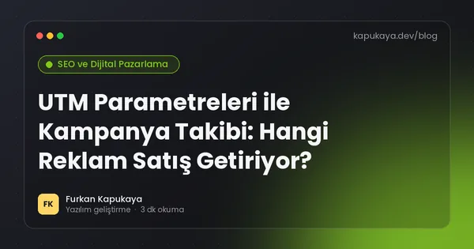
UTM Parametreleri ile Kampanya Takibi: Hangi Reklam Satış Getiriyor?
UTM parametrelerinin ne olduğu, source, medium, campaign, term ve content kullanımı, isimlendirme standardı, GA4'te raporlama ve kampanya ölçümünde sık yapılan hatalar.
Yazıyı oku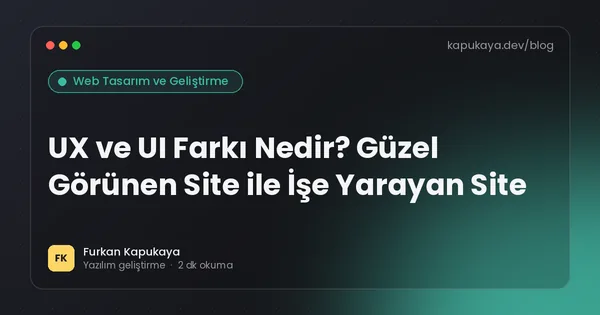
UX ve UI Farkı Nedir? Güzel Görünen Site ile İşe Yarayan Site
Kullanıcı deneyimi (UX) ile kullanıcı arayüzü (UI) arasındaki fark, her birinin sorumlulukları, kullanılabilirlik ilkeleri ve işletmelerin web sitesi veya yazılım projesinde nelere dikkat etmesi gerektiği.
Yazıyı oku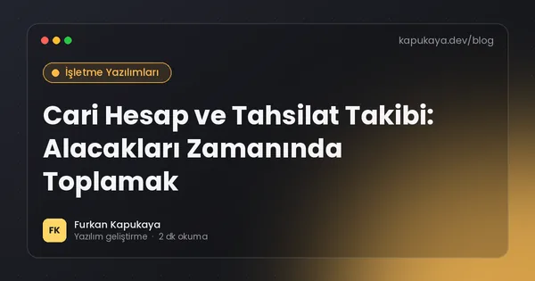
Cari Hesap ve Tahsilat Takibi: Alacakları Zamanında Toplamak
Cari hesap mantığı, vade takibi, yaşlandırma raporu, otomatik hatırlatmalar, risk limiti, mutabakat ve tahsilat sürecini dijitalleştiren yazılımın sağladıkları.
Yazıyı oku
E-ticaret Metrikleri: Dönüşüm, AOV, CLV ve CAC Nasıl Hesaplanır?
E-ticaretin temel metrikleri; dönüşüm oranı, ortalama sepet tutarı (AOV), müşteri yaşam boyu değeri (CLV), müşteri edinme maliyeti (CAC), tekrar satın alma oranı ve bu metriklerin birbirleriyle ilişkisi.
Yazıyı oku
Uygulamadan E-posta Göndermek: SMTP, Teslim Edilebilirlik ve Şablonlar
Yazılımlardan otomatik e-posta gönderiminin temelleri; SMTP ve e-posta API'leri, SPF, DKIM, DMARC, toplu gönderim kuralları, abonelikten çıkma, şablon tasarımı ve gönderim kuyruğu.
Yazıyı oku
C# Generics: Tür Güvenli ve Tekrar Kullanılabilir Kod Yazmak
C# generics kavramı, generic sınıf ve metotlar, kısıtlamalar (where), kovaryans ve kontravaryans, generic math ve generics kullanırken sık yapılan hatalar.
Yazıyı oku
Veritabanı İndeksi Nedir? Yavaş Sorguları Hızlandırmanın Temeli
Veritabanı indekslerinin çalışma mantığı, clustered ve nonclustered indeks, bileşik indeks ve sütun sırası, kapsayan indeks, indekslerin yazma maliyeti ve hangi sütunlara indeks eklenmesi gerektiği.
Yazıyı oku
Parolalar Nasıl Saklanmalı? Hash, Salt ve Argon2
Kullanıcı parolalarının güvenli saklanması; şifreleme ile hash farkı, salt, yavaş hash algoritmaları Argon2, bcrypt ve PBKDF2, eski sistemlerden geçiş ve parola politikası önerileri.
Yazıyı oku
Büyük Dil Modelleri (LLM) Nasıl Çalışır? Token, Bağlam ve Olasılık
ChatGPT, Claude ve Gemini gibi büyük dil modellerinin temel çalışma mantığı; token, sonraki kelime tahmini, eğitim aşamaları, bağlam penceresi, sıcaklık ayarı ve modellerin güçlü ve zayıf yanları.
Yazıyı oku
Yazılımcı Portföyü ve GitHub Profili: İşe Alımda Fark Yaratmak
Yazılımcılar için etkili portföy hazırlama; hangi projelerin seçileceği, iyi bir README, GitHub profili, canlı demo, kişisel web sitesi ve deneyimsiz adaylar için proje fikirleri.
Yazıyı oku
DNS Nedir? Alan Adı Nasıl IP Adresine Dönüşür?
DNS'in çalışma mantığı, A, AAAA, CNAME, MX ve TXT kayıtları, TTL süresi, DNS yayılımı ve alan adı taşırken sık yapılan hatalar.
Yazıyı oku
Kodda İsimlendirme: Değişken, Metot ve Sınıf Adı Nasıl Seçilir?
Yazılımda iyi isimlendirmenin kuralları; değişken, metot, sınıf ve boolean isimleri, kısaltmalardan kaçınma, Türkçe mi İngilizce mi kararı ve C# isimlendirme standartları.
Yazıyı oku
Linux Temel Komutları: Sunucuya İlk Kez Bağlananlar İçin Rehber
Bir Linux sunucuda dosya ve klasör işlemleri, yetkiler, süreç ve servis yönetimi, disk ve bellek kontrolü, log okuma ve paket güncelleme için en çok kullanılan komutlar.
Yazıyı oku
KPI Nedir? İşletmeler İçin Doğru Performans Göstergelerini Seçmek
Anahtar performans göstergelerinin (KPI) tanımı, iyi bir KPI'ın özellikleri, öncü ve gecikmeli göstergeler, sektörlere göre örnek KPI'lar ve KPI takibinde sık yapılan hatalar.
Yazıyı oku
Arama Niyeti (Search Intent): Doğru İçerik İçin İlk Adım
Arama niyetinin dört temel türü, arama sonuçlarından niyet okuma, niyete uygun içerik biçimi seçme ve aynı anahtar kelimede neden yanlış içerik türünün sıralanamadığı.
Yazıyı oku
Site Mimarisi ve Menü Yapısı: Ziyaretçi Aradığını Kolayca Bulmalı
Web sitesi bilgi mimarisinin nasıl planlanacağı; sayfa hiyerarşisi, menü tasarımı, kategori yapısı, URL düzeni, breadcrumb, iç linkleme ve SEO ile ilişkisi.
Yazıyı oku
Satın Alma ve Tedarikçi Yönetimi Yazılımı: Talepten Teslim Almaya
Satın alma sürecinin dijitalleştirilmesi; satın alma talebi, onay akışı, teklif karşılaştırma, sipariş, mal kabul, fatura eşleştirme ve tedarikçi performans değerlendirmesi.
Yazıyı oku
E-ticarette İade Yönetimi: Maliyeti Düşürüp Müşteriyi Kazanmak
E-ticarette iade sürecinin uçtan uca yönetimi; iade politikası, kolay iade akışı, iade nedenlerinin analizi, depo kontrolü, geri ödeme, stoka dönüş ve iadeleri azaltan önlemler.
Yazıyı oku
Banka Entegrasyonu: Hesap Hareketlerini Otomatik Çekmek ve Eşleştirmek
Banka hesap hareketlerinin yazılıma otomatik aktarılması; banka API'leri, ekstre dosyaları, açık bankacılık, tahsilatların cari hesaplarla eşleştirilmesi ve güvenlik gereklilikleri.
Yazıyı oku
C# Pattern Matching: switch İfadeleri ve Desenlerle Okunabilir Kod
C# pattern matching özellikleri; is ve switch ifadeleri, tip, özellik, ilişkisel, mantıksal ve liste desenleri ile iş kurallarını daha kısa ve okunabilir yazma örnekleri.
Yazıyı oku
Transaction ve ACID: Veritabanında Ya Hep Ya Hiç
Veritabanı transaction kavramı, ACID özellikleri, izolasyon seviyeleri, kirli okuma ve kayıp güncelleme sorunları, deadlock ve uygulama kodunda transaction kullanımı.
Yazıyı oku
XSS (Cross-Site Scripting) Nedir? Web Uygulamalarında Nasıl Önlenir?
Siteler arası betik çalıştırma (XSS) saldırısının türleri, oturum çalma gibi sonuçları, çıktı kodlama, Razor ve modern çatıların koruması, Content Security Policy, HttpOnly çerezler ve zengin metin güvenliği.
Yazıyı oku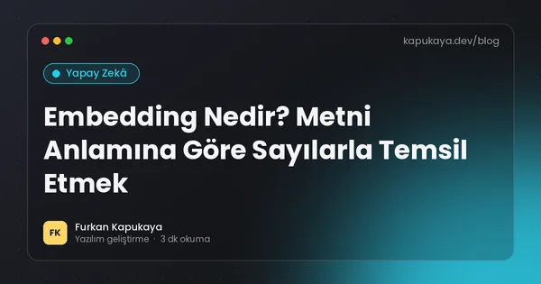
Embedding Nedir? Metni Anlamına Göre Sayılarla Temsil Etmek
Embedding (vektör temsili) kavramı, anlamsal benzerlik, kosinüs benzerliği, anlamsal arama, öneri, sınıflandırma ve kümeleme gibi kullanım alanları ile model seçimi ve maliyet ipuçları.
Yazıyı oku
Teknik Mülakata Hazırlık: Yazılımcılar İçin Kapsamlı Rehber
Yazılım geliştirici mülakatlarının aşamaları, temel konu başlıkları, kodlama sorularında yaklaşım, sistem tasarımı, ev ödevi projeleri, davranışsal sorular ve mülakatta sorulacak sorular.
Yazıyı oku
HTTP Durum Kodları: 200, 301, 404 ve 500 Ne Anlama Gelir?
HTTP durum kodlarının beş ailesi, en sık görülen 200, 201, 301, 302, 304, 400, 401, 403, 404, 429, 500 ve 503 kodlarının anlamı ve SEO ile API tasarımındaki etkileri.
Yazıyı oku
DRY, KISS ve YAGNI: Yazılımda Sadeliğin Üç İlkesi
Tekrar etme (DRY), basit tut (KISS) ve ihtiyacın olmayanı yapma (YAGNI) ilkelerinin anlamı, örnekleri, yanlış uygulanmaları ve birbirleriyle dengesi.
Yazıyı oku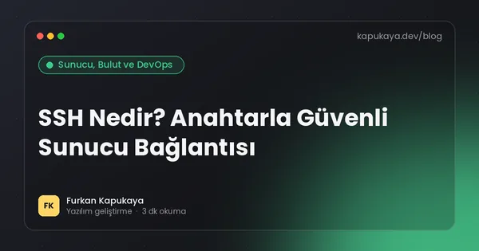
SSH Nedir? Anahtarla Güvenli Sunucu Bağlantısı
SSH protokolünün ne olduğu, parola yerine anahtar kullanmanın önemi, ed25519 anahtar oluşturma, sunucu sertleştirme ayarları, fail2ban ve SSH ile dosya aktarımı.
Yazıyı oku
Veri Temizliği: Kirli Veriyle Doğru Karar Verilmez
Mükerrer kayıtlar, tutarsız yazımlar, eksik alanlar ve hatalı formatlar gibi kirli veri sorunları; veri temizleme adımları, doğrulama kuralları ve verinin baştan temiz girilmesini sağlayan yöntemler.
Yazıyı oku
Canonical Etiketi ve Kopya İçerik Sorunu: Doğru Sayfayı İşaret Etmek
Canonical etiketinin ne işe yaradığı, kopya içeriğin yaygın nedenleri, URL parametreleri, filtre sayfaları, http-https ve www sürümleri, sık yapılan canonical hataları ve kontrol yöntemleri.
Yazıyı oku
Güven Veren Web Sitesi: Ziyaretçiyi İkna Eden 12 Sinyal
Bir web sitesinin ziyaretçiye güven vermesini sağlayan unsurlar; iletişim bilgileri, gerçek referanslar, yorumlar, yasal sayfalar, HTTPS, güncel içerik, şeffaf fiyatlandırma ve profesyonel tasarım.
Yazıyı oku
Saha Ekipleri İçin Mobil Uygulama: Görev, Konum ve Fotoğraflı Rapor
Servis, montaj, bakım ve satış ekipleri için saha uygulamasının sağladıkları; iş emri atama, çevrim dışı çalışma, fotoğraf ve imza ile kanıt, rota planlama ve konum verisinde KVKK dikkat noktaları.
Yazıyı oku
E-ticarette Fiyatlandırma Stratejileri: Kârlılığı Koruyarak Rekabet Etmek
Online satışta maliyet tabanlı, rekabet tabanlı ve değer tabanlı fiyatlandırma; kampanya ve indirim tasarımı, ücretsiz kargo eşiği, psikolojik fiyatlama, pazaryeri fiyatı ve fiyat bilgisinde yasal dikkat noktaları.
Yazıyı oku
No-code Otomasyon Araçları: Ne Zaman Yeterli, Ne Zaman Özel Kod?
Zapier, Make ve n8n gibi kodsuz otomasyon araçlarının avantajları ve sınırları; maliyet, hata yönetimi, veri güvenliği, KVKK ve özel yazılıma geçiş zamanının işaretleri.
Yazıyı oku
C# Koleksiyonları: List, Dictionary, HashSet ve Doğru Seçim
.NET koleksiyon türlerinin karşılaştırması; List, Array, Dictionary, HashSet, Queue, Stack, eşzamanlı koleksiyonlar, salt okunur ve Frozen koleksiyonlar ile performans açısından doğru seçim.
Yazıyı oku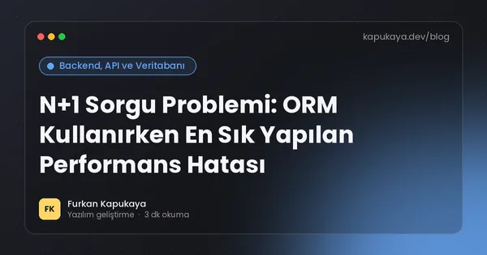
N+1 Sorgu Problemi: ORM Kullanırken En Sık Yapılan Performans Hatası
N+1 sorgu probleminin ne olduğu, Entity Framework Core'da nasıl ortaya çıktığı, tespit yöntemleri ve Include, projeksiyon, split query ve toplu yükleme ile çözümü.
Yazıyı oku
CSRF Nedir? Siteler Arası İstek Sahteciliğine Karşı Korunma
Cross-Site Request Forgery (CSRF) saldırısının çalışma mantığı, örnek senaryo, anti-forgery token, SameSite çerezler, ASP.NET Core koruması, API'lerde durum ve sık yapılan hatalar.
Yazıyı oku
İşletmede İlk Yapay Zekâ Projesi: Doğru Kullanım Senaryosunu Seçmek
İşletmelerde yapay zekâ projesine başlarken kullanım senaryosu seçimi, etki ve uygulanabilirlik değerlendirmesi, veri hazırlığı, pilot proje, başarı ölçütleri ve sık yapılan hatalar.
Yazıyı oku
Yazılım İşlerinde Süre Tahmini: Neden Hep Şaşar, Nasıl İyileşir?
Yazılım geliştirmede süre tahminlerinin neden yanıldığı, işi parçalara bölme, aralıklı tahmin, belirsizlik payı, story point ve geçmiş veriye dayalı tahmin ile müşteriye tahmin iletme yöntemleri.
Yazıyı oku
IP Adresi Nedir? IPv4, IPv6, Statik ve Dinamik IP Farkı
IP adresinin ne olduğu, IPv4 ve IPv6 farkı, özel ve genel IP, statik ve dinamik IP, NAT ve CGNAT kavramları ile işletmeler için pratik öneriler.
Yazıyı oku
SOLID Prensipleri: Örneklerle Anlaşılır Rehber
Nesne yönelimli tasarımın beş temel ilkesi SOLID: tek sorumluluk, açık-kapalı, Liskov, arayüz ayrımı ve bağımlılıkların tersine çevrilmesi; C# örnekleri ve aşırıya kaçmadan uygulama.
Yazıyı oku
Nginx ve Reverse Proxy Nedir? Uygulamanızın Önündeki Kapı
Reverse proxy kavramı, Nginx'in görevleri, HTTPS sonlandırma, ASP.NET Core uygulamasını Nginx arkasında yayınlama, sıkıştırma, önbellek ve sık yapılan yapılandırma hataları.
Yazıyı oku
Excel Pivot Tablo Rehberi: Dakikalar İçinde Özet Rapor Hazırlamak
Excel pivot tablonun ne işe yaradığı, verinin pivot için nasıl hazırlanacağı, satır, sütun, değer ve filtre alanları, gruplama, dilimleyiciler ve pivot tabloların sınırları.
Yazıyı oku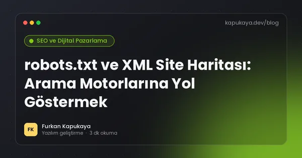
robots.txt ve XML Site Haritası: Arama Motorlarına Yol Göstermek
robots.txt dosyasının ne yaptığı ve yapmadığı, temel kurallar, yapay zekâ tarayıcıları, XML site haritasının yapısı, sınırları, Search Console'a gönderimi ve sık yapılan hatalar.
Yazıyı oku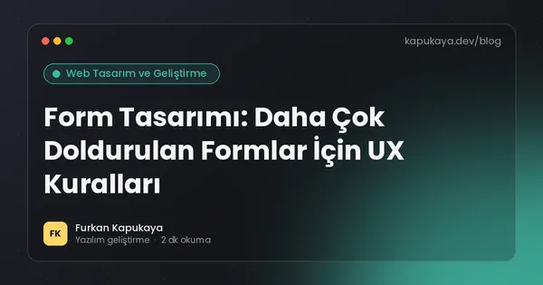
Form Tasarımı: Daha Çok Doldurulan Formlar İçin UX Kuralları
İletişim, teklif ve kayıt formlarında dönüşümü artıran tasarım ilkeleri; alan sayısı, etiketler, doğrulama, hata mesajları, mobil klavye, erişilebilirlik ve KVKK onay kutuları.
Yazıyı oku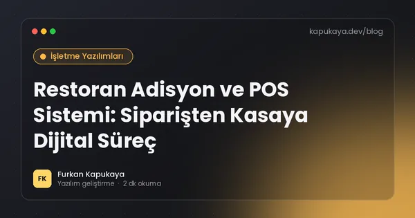
Restoran Adisyon ve POS Sistemi: Siparişten Kasaya Dijital Süreç
Restoran ve kafeler için adisyon sistemi, masa yönetimi, mutfak ekranı, reçete bazlı stok, paket servis ve yemek platformu entegrasyonu, yazar kasa (ÖKC) uyumu ve raporlama.
Yazıyı oku
Sosyal Medyadan Satış: Instagram ve WhatsApp ile Ticaret Rehberi
Sosyal medya üzerinden satış yapan işletmeler için sipariş, ödeme, stok ve iletişim süreçleri; mesajlaşma ile satışın sınırları, güvenli ödeme, yasal yükümlülükler ve kendi siteye geçiş zamanı.
Yazıyı oku
Web Scraping: Web Sitelerinden Otomatik Veri Toplamanın Kuralları
Web scraping'in ne olduğu, kullanım alanları, hukuki ve etik sınırlar, robots.txt, kullanım koşulları, kişisel veriler, teknik yaklaşımlar ve önce API aramanın önemi.
Yazıyı oku
ASP.NET Core Middleware: İstek İşleme Hattını Anlamak
ASP.NET Core'da middleware kavramı, istek hattının çalışma sırası, yerleşik middleware'ler, özel middleware yazma, sıralama hataları ve filtrelerle farkı.
Yazıyı oku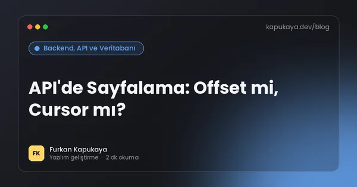
API'de Sayfalama: Offset mi, Cursor mı?
API ve listelerde sayfalamanın neden gerekli olduğu, offset ve cursor (keyset) sayfalama karşılaştırması, toplam kayıt sayısı, sıralama tutarlılığı, yanıt formatı ve performans ipuçları.
Yazıyı oku
Şifre Yöneticisi Nedir? İşletmeler İçin Güvenli Parola Alışkanlığı
Şifre yöneticilerinin nasıl çalıştığı, faydaları, ekip içi parola paylaşımı, ana parola ve iki faktörlü doğrulama, seçim kriterleri ve çalışan ayrılırken erişim yönetimi.
Yazıyı oku
Yapay Zekâ API Maliyetleri: Token Hesabı ve Optimizasyon Yolları
Yapay zekâ API'lerinin token bazlı fiyatlandırması, girdi ve çıktı token maliyeti, aylık maliyet tahmini, model seçimi, istem önbelleği, toplu işleme ve maliyeti düşürmenin pratik yolları.
Yazıyı oku
Agile, Scrum ve Kanban: Küçük Ekipler İçin Pratik Rehber
Çevik (agile) yaklaşımın temel fikirleri, Scrum'ın rolleri, etkinlikleri ve sprint yapısı, Kanban panosu ve WIP sınırı, iki yöntemin karşılaştırması ve küçük ekiplerde uygulanması.
Yazıyı oku
Frontend, Backend ve Full Stack Nedir? Bir Uygulamanın Katmanları
Frontend ve backend'in ne olduğu, aralarındaki iletişim, kullanılan teknolojiler, full stack kavramı ve bir yazılım projesinde iş bölümünün nasıl yapıldığı.
Yazıyı oku
Refactoring Nedir? Davranışı Bozmadan Kodu İyileştirmek
Refactoring'in tanımı, ne zaman yapılması gerektiği, kod kokuları, güvenli refactoring adımları, testlerin rolü ve büyük yeniden yazım (rewrite) yerine küçük adımların avantajı.
Yazıyı oku
Docker Compose ile Çok Servisli Uygulama: Pratik Rehber
Docker Compose'un ne işe yaradığı, compose.yaml yapısı, uygulama ve veritabanını birlikte çalıştırma, volume, ağ, ortam değişkenleri, sağlık kontrolü ve sık kullanılan komutlar.
Yazıyı oku
Veri Görselleştirme: Doğru Grafik Nasıl Seçilir?
Hangi veri için hangi grafiğin kullanılacağı; çubuk, çizgi, pasta, dağılım ve tablo seçimi, yanıltıcı grafiklerden kaçınma, renk kullanımı ve yönetici raporlarında görselleştirme ilkeleri.
Yazıyı oku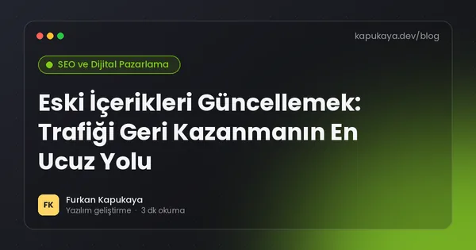
Eski İçerikleri Güncellemek: Trafiği Geri Kazanmanın En Ucuz Yolu
Blog ve web sitesi içeriklerinin neden zamanla trafik kaybettiği, güncellenecek yazıların nasıl seçileceği, güncelleme kontrol listesi, birleştirme, kaldırma kararları ve tarih bilgisinin dürüst kullanımı.
Yazıyı oku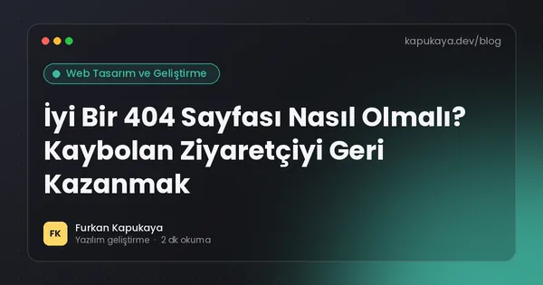
İyi Bir 404 Sayfası Nasıl Olmalı? Kaybolan Ziyaretçiyi Geri Kazanmak
404 hata sayfasının amacı, doğru durum kodu, ziyaretçiyi yönlendiren içerik, arama kutusu, kırık bağlantıların tespiti ve 404 hatalarının SEO'ya etkisi.
Yazıyı oku
Klinik ve Muayenehane Hasta Takip Programı: Randevu, Kayıt ve KVKK
Klinik, muayenehane ve danışmanlık merkezleri için hasta takip yazılımının sağladıkları; randevu, hasta kartı, tedavi planı, hatırlatmalar, tahsilat ve özel nitelikli sağlık verisi için KVKK ve güvenlik gereklilikleri.
Yazıyı oku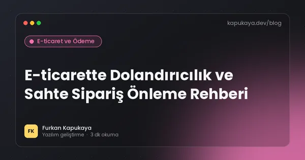
E-ticarette Dolandırıcılık ve Sahte Sipariş Önleme Rehberi
Online mağazaları hedef alan dolandırıcılık türleri; çalıntı kart, ters ibraz, hesap ele geçirme, kupon istismarı, sahte iade ve bot saldırıları ile risk sinyalleri, 3D Secure ve operasyonel önlemler.
Yazıyı oku
Sensörlerden Veri Toplama: Küçük İşletmeler İçin IoT Rehberi
Nesnelerin interneti (IoT) ile sıcaklık, nem, enerji ve makine verilerinin toplanması; sensör türleri, bağlantı seçenekleri, MQTT, veri depolama, uyarılar ve IoT cihaz güvenliği.
Yazıyı oku
ASP.NET Core Health Checks: Uygulamanın Sağlığını Ölçmek
ASP.NET Core sağlık kontrollerinin kurulumu; liveness ve readiness ayrımı, veritabanı ve dış servis kontrolleri, özel kontrol yazma, güvenlik ve izleme araçlarıyla kullanım.
Yazıyı oku
API Hata Yanıtları: Problem Details (RFC 9457) ile Standart Hata Formatı
API'lerde tutarlı hata yanıtı tasarımı, Problem Details standardı (RFC 9457), alanları, doğrulama hataları, ASP.NET Core'da kullanımı ve hata mesajlarında güvenlik.
Yazıyı oku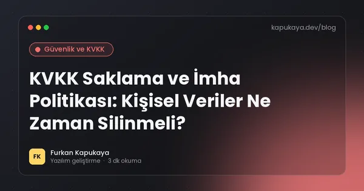
KVKK Saklama ve İmha Politikası: Kişisel Veriler Ne Zaman Silinmeli?
Kişisel verilerin saklama süreleri, saklama ve imha politikasının içeriği, silme, yok etme ve anonimleştirme yöntemleri, periyodik imha, yazılımda otomatik imha ve yedeklerdeki veriler.
Yazıyı oku
Prompt Injection Nedir? Yapay Zekâ Uygulamalarında Güvenlik Riski
Prompt injection saldırısının doğrudan ve dolaylı türleri, yapay zekâ ajanlarında veri sızdırma ve yetkisiz işlem riskleri, en az yetki, insan onayı ve çıktı doğrulama gibi savunma katmanları.
Yazıyı oku
Yazılımcı Olarak Sürekli Öğrenme: Teknoloji Değişirken Güncel Kalmak
Hızla değişen yazılım dünyasında öğrenmeyi sürdürülebilir kılmak; temel ve geçici bilgi ayrımı, öğrenme kaynakları, öğrenerek yapma, not alma, yapay zekâ ile öğrenme ve tükenmişlikten kaçınma.
Yazıyı oku
API Nedir? Teknik Olmayanlar İçin Basit Anlatım
API kavramının restoran garsonu benzetmesiyle sade anlatımı, gündelik hayattaki API örnekleri, API anahtarı, entegrasyon maliyeti ve işletmelerin API sorarken dikkat etmesi gerekenler.
Yazıyı oku
Code Review Nasıl Yapılır? Etkili Kod İnceleme Rehberi
Kod incelemenin amacı, neye bakılması gerektiği, pull request boyutu, yapıcı yorum yazma, otomasyonun rolü ve yapay zekâ destekli kod incelemesinde dikkat edilecekler.
Yazıyı oku
Uptime İzleme ve Uyarı: Siteniz Çöktüğünde İlk Siz Bilin
Web sitesi ve uygulamalar için erişilebilirlik izleme, SSL ve alan adı süresi takibi, sağlık kontrol uçları, sunucu kaynak izleme, uyarı kanalları ve uyarı yorgunluğundan kaçınma.
Yazıyı oku
Yöneticiler ve Analistler İçin SQL: Raporu Kendiniz Çıkarın
Teknik olmayan çalışanlar için SQL'in temelleri; SELECT, WHERE, ORDER BY, GROUP BY, JOIN ve tarih filtreleri ile örnek iş soruları, güvenli çalışma için salt okunur erişim önerileri.
Yazıyı oku
Veritabanı Nedir? Tablolar, Kayıtlar ve İlişkiler
Veritabanının ne olduğu, Excel tablosundan farkı, tablo, kayıt, alan, birincil ve yabancı anahtar kavramları, ilişkisel ve NoSQL veritabanları ile veri güvenliği temelleri.
Yazıyı oku
Hata Yönetimi: Exception'ları Doğru Kullanmak
Yazılımda hata yönetiminin temel ilkeleri; exception ne zaman fırlatılır, ne zaman yakalanır, boş catch tehlikesi, global hata yakalama, loglama, kullanıcıya hata mesajı ve Result deseni.
Yazıyı oku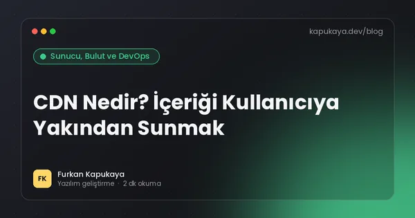
CDN Nedir? İçeriği Kullanıcıya Yakından Sunmak
İçerik dağıtım ağının (CDN) çalışma mantığı, hız ve güvenlik faydaları, önbellek kuralları, önbellek temizleme, DDoS koruması ve küçük işletmelerin CDN kullanırken dikkat etmesi gerekenler.
Yazıyı oku
Power BI mı, Özel Raporlama Paneli mi? İşletmeler İçin Karar Rehberi
Power BI ve benzeri iş zekâsı araçları ile işletmeye özel geliştirilen raporlama panellerinin karşılaştırması; maliyet, esneklik, veri kaynakları, yetkilendirme ve hangi durumda hangisinin seçileceği.
Yazıyı oku
Karakter Kodlama ve UTF-8: Türkçe Karakter Sorunları Neden Olur?
Ş, ğ, ı gibi Türkçe karakterlerin neden bozuk göründüğü, UTF-8 ve Windows-1254 farkı, CSV ve Excel sorunları ile yazılımda Türkçe büyük-küçük harf (İ/ı) tuzağı.
Yazıyı oku
Tasarım Desenleri (Design Patterns): En Çok Kullanılan 8 Desen
Yazılımda tasarım desenlerinin ne olduğu ve gerçek projelerde en sık kullanılan Strategy, Factory, Repository, Decorator, Observer, Adapter, Singleton ve Builder desenlerinin pratik örnekleri.
Yazıyı oku
Geliştirme, Test ve Canlı Ortam Ayrımı: Neden ve Nasıl?
Yazılım projelerinde geliştirme (dev), test/staging ve canlı (prod) ortamlarının amacı, yapılandırma ayrımı, test verisi ve KVKK, sürüm akışı ve küçük ekipler için pratik kurulum.
Yazıyı oku
Veri Ambarı ve ETL Nedir? Dağınık Veriyi Tek Yerde Toplamak
Veri ambarının ne olduğu, operasyonel veritabanından farkı, ETL ve ELT süreçleri, artımlı yükleme, yıldız şema ve küçük işletmeler için hafif bir raporlama veritabanı yaklaşımı.
Yazıyı oku
Yazılımda Tarih, Saat ve Zaman Dilimi: UTC Neden Önemli?
Tarih ve saati saklarken UTC kullanmanın önemi, Türkiye saatinin (UTC+3) özellikleri, yaz saati, tarih formatları, ISO 8601 ve .NET'te DateTime, DateTimeOffset ve TimeProvider kullanımı.
Yazıyı oku
Katmanlı Mimari ve Clean Architecture: Uygulamayı Doğru Bölmek
Katmanlı mimarinin (sunum, iş, veri) mantığı, Clean Architecture ve bağımlılık kuralı, .NET projelerinde örnek klasör yapısı, artıları, eksileri ve dikey dilim (vertical slice) alternatifi.
Yazıyı oku
Sıfır Kesintili Dağıtım: Blue-Green, Rolling ve Canary Yöntemleri
Yeni sürümü kullanıcıları etkilemeden yayına almanın yöntemleri; rolling, blue-green ve canary dağıtım, veritabanı değişikliklerinde genişlet-daralt yaklaşımı, özellik bayrakları ve geri alma planı.
Yazıyı oku
RFM Analizi ile Müşteri Segmentasyonu: En Değerli Müşterilerinizi Bulun
RFM analizinin (yenilik, sıklık, parasal değer) mantığı, puanlama yöntemi, şampiyonlar ve kaybedilmek üzere olan müşteriler gibi segmentler, her segment için aksiyon önerileri ve uygulama adımları.
Yazıyı oku
Yazılım Sürüm Numaraları: Semantik Versiyonlama (SemVer) Nedir?
2.4.1 gibi sürüm numaralarının anlamı, semantik versiyonlama kuralları, ön sürümler, LTS kavramı ve kullandığınız yazılımları ne zaman güncellemeniz gerektiği.
Yazıyı oku
Domain-Driven Design'a Giriş: İş Dilini Koda Taşımak
Domain-Driven Design (DDD) yaklaşımının temel kavramları; ortak dil, bounded context, entity, value object, aggregate ve domain event; hangi projelerde faydalı olduğu.
Yazıyı oku
Gözlemlenebilirlik (Observability): Log, Metrik ve İz ile Sistemi Anlamak
Gözlemlenebilirliğin üç temel sinyali olan log, metrik ve dağıtık izleme (trace); OpenTelemetry standardı, korelasyon kimliği, .NET uygulamalarında uygulanması ve doğru alarm kurma.
Yazıyı oku
Kohort Analizi: Müşterileriniz Geri Geliyor mu?
Kohort analizinin ne olduğu, müşteri elde tutma (retention) tablosunun nasıl okunduğu, e-ticaret ve abonelik işlerinde kullanımı ve toplam rakamların gizlediği sorunları ortaya çıkarma.
Yazıyı oku
Açık Kaynak Lisansları: MIT, Apache, GPL Arasındaki Fark
Açık kaynak yazılım lisanslarının türleri, MIT, Apache 2.0, GPL, LGPL ve AGPL arasındaki farklar, ticari projelerde dikkat edilecekler ve lisans değişikliği riskleri.
Yazıyı oku
Monolit mi Mikroservis mi? Doğru Mimari Kararı
Monolit ve mikroservis mimarilerinin karşılaştırması, mikroservislerin gizli maliyetleri, modüler monolit yaklaşımı ve küçük ile orta ölçekli projeler için gerçekçi öneriler.
Yazıyı oku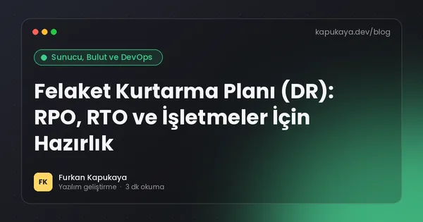
Felaket Kurtarma Planı (DR): RPO, RTO ve İşletmeler İçin Hazırlık
Felaket kurtarma planının ne olduğu, RPO ve RTO kavramları, yedekleme ile kurtarma farkı, fidye yazılımı senaryosu, düzenli tatbikat ve küçük işletmeler için uygulanabilir bir plan şablonu.
Yazıyı oku
Satış Tahmini Nasıl Yapılır? Basit ve Güvenilir Yöntemler
İşletmeler için satış tahmininin önemi; hareketli ortalama, mevsimsellik, geçen yıl karşılaştırması, satış hunisi tabanlı tahmin, tahmin hatasının ölçülmesi ve stok planlamasında kullanımı.
Yazıyı oku
Bulut Bilişim Nedir? IaaS, PaaS ve SaaS Farkı
Bulut bilişimin ne olduğu, IaaS, PaaS ve SaaS modelleri, paylaşılan sorumluluk ilkesi, maliyet yönetimi ve işletmelerin buluta geçerken dikkat etmesi gereken KVKK konuları.
Yazıyı oku
Teknik Borç Nedir? Ne Zaman ve Nasıl Ödenmeli?
Teknik borcun tanımı, türleri, faizinin nasıl ödendiği, belirtileri, ölçülmesi, yönetilmesi ve teknik olmayan yöneticilere anlatılması için pratik bir rehber.
Yazıyı oku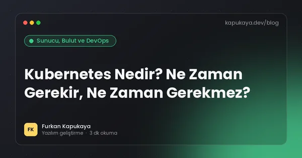
Kubernetes Nedir? Ne Zaman Gerekir, Ne Zaman Gerekmez?
Kubernetes'in ne olduğu, sağladığı faydalar, pod, deployment ve service gibi temel kavramlar, operasyonel maliyeti ve küçük ve orta ölçekli projeler için daha basit alternatifler.
Yazıyı oku
A/B Testi Nedir? Doğru Kurulum ve Sonuçları Yorumlama
A/B testinin mantığı, hipotez kurma, örneklem büyüklüğü, test süresi, istatistiksel anlamlılık, sık yapılan hatalar ve web sitesi, e-posta ve fiyatlandırma için test fikirleri.
Yazıyı oku
Çerez, Önbellek ve Tarayıcı Verileri: Ne İşe Yarar, Ne Zaman Temizlenir?
Tarayıcı çerezleri, önbellek (cache), yerel depolama ve oturum verilerinin farkı, hangi sorunlarda temizlenmesi gerektiği ve web sitesi sahipleri için önbellek ipuçları.
Yazıyı oku
Yazılım Dokümantasyonu: README'den Mimari Karar Kayıtlarına (ADR)
Yazılım projelerinde hangi dokümantasyonun gerçekten işe yaradığı; iyi bir README, kurulum rehberi, mimari karar kayıtları (ADR), API dokümantasyonu ve dokümanı güncel tutma yöntemleri.
Yazıyı oku
Üretim Takip Programı: İş Emrinden Sevkiyata Atölye Yönetimi
Küçük ve orta ölçekli üretim işletmeleri için iş emri, ürün reçetesi, hammadde tüketimi, fire takibi, istasyon bazlı ilerleme ve maliyet raporlarını içeren üretim takip yazılımı rehberi.
Yazıyı oku
C# Nullable Reference Types: NullReferenceException'a Derleme Anında Veda
C#'ta nullable reference types özelliğinin mantığı, uyarıların anlamı, ? ve ! işaretlerinin doğru kullanımı, mevcut projelerde kademeli geçiş ve sık yapılan hatalar.
Yazıyı oku
Kurumsal Web Sitesi Nasıl Yapılır?
Kurumsal web sitesinde güven, mobil uyumluluk, performans, içerik mimarisi ve dönüşüm odaklı tasarım.
Yazıyı oku
AI ile Kod Yazarken Güvenlik ve Kod Kalitesi
AI tarafından üretilen kodu doğrulama, secret yönetimi, test, code review ve güvenlik kontrolleri için pratik yaklaşım.
Yazıyı oku
Çerez Politikası ve Çerez Onayı: Web Siteleri İçin KVKK Rehberi
Web sitelerinde zorunlu, analitik ve pazarlama çerezlerinin ayrımı, KVKK Çerez Uygulamaları Rehberi'ne göre açık rıza, reddetme seçeneği, çerez politikası içeriği ve teknik uygulama.
Yazıyı oku
Pazaryeri Entegrasyonu Nedir? Ürün, Stok ve Siparişleri Tek Yerden Yönetmek
Pazaryerlerinde satış yapan işletmeler için ürün, stok, fiyat ve sipariş bilgilerinin API üzerinden tek bir sistemden yönetilmesi, entegrasyon türleri ve dikkat edilmesi gerekenler.
Yazıyı oku
Yazılım Projesinde Kapsam Kayması Nasıl Önlenir?
Yazılım projelerinde kapsamın kontrolsüz büyümesinin nedenleri, kapsam belgesi, değişiklik talebi süreci, önceliklendirme ve hem müşteri hem geliştirici açısından sağlıklı proje yönetimi.
Yazıyı oku
Yazılım Projesi İçin Doğru Teklif Nasıl İstenir? Brif Hazırlama Rehberi
Yazılım veya web projesi için teklif isterken hazırlanması gereken brif, kapsam, örnekler, bütçe aralığı, takvim ve teklifleri değerlendirme kriterleri.
Yazıyı oku
Sepet Terk Oranı Nasıl Düşürülür? Ödeme Adımında Kaybedilen Satışlar
E-ticaret sitelerinde müşterilerin sepeti terk etme nedenleri, ödeme adımlarını sadeleştirme, sürpriz maliyetler, misafir alışveriş, güven unsurları ve hatırlatma e-postalarının doğru kullanımı.
Yazıyı oku
Kurumsal E-posta Adresi: Alan Adlı E-posta, SPF, DKIM ve DMARC
Alan adınızla kurumsal e-posta kullanmanın faydaları, SPF, DKIM ve DMARC kayıtlarının ne işe yaradığı, e-postaların spam klasörüne düşmesini önleme ve sahte e-postalara karşı koruma.
Yazıyı oku
Yazılımda Kaynak Kod Sahipliği: Sözleşmede Nelere Dikkat Edilmeli?
Özel yazılım projelerinde kaynak kodun kime ait olduğu, FSEK kapsamında mali hakların devri, yazılı sözleşme şartı, açık kaynak bileşenler, erişim bilgileri ve proje bitiminde teslim edilmesi gerekenler.
Yazıyı oku
.NET Framework'ten Modern .NET'e Geçiş: Adım Adım Yol Haritası
Eski .NET Framework uygulamalarını .NET 10'a taşımanın faydaları, uyumluluk analizi, kütüphane güncellemeleri, WinForms ve WPF taşıma, ASP.NET'ten ASP.NET Core'a geçiş stratejileri.
Yazıyı oku
Avalonia ile Çapraz Platform Masaüstü Uygulama: Windows, macOS ve Linux
.NET ile Windows, macOS ve Linux'ta çalışan masaüstü uygulamalar için Avalonia UI'ın özellikleri, WPF ile benzerlikleri, MAUI ile karşılaştırması ve hangi projelere uygun olduğu.
Yazıyı oku
Yapay Zekâ ile Müşteri Desteği: Neleri Otomatikleştirmeli, Neleri Değil?
Müşteri hizmetlerinde yapay zekâ kullanımı, sık sorulan soruların otomatik cevaplanması, talep sınıflandırma, temsilci asistanı, insan desteğine devir, ölçüm ve müşteri güveni.
Yazıyı oku
Passkey Nedir? Parolasız ve Oltalamaya Dayanıklı Giriş
Passkey'in çalışma mantığı, açık anahtarlı kriptografi, parola ve SMS koduna göre avantajları, cihazlar arası senkronizasyon ve web uygulamalarına passkey desteği eklemek.
Yazıyı oku
Emlak Ofisi Portföy Yazılımı: İlan, Müşteri ve Randevu Yönetimi
Emlak ofisleri için portföy kaydı, müşteri talep eşleştirme, yer gösterme randevuları, ilan sitesi entegrasyonu, web sitesi ve yetki belgesi gibi mevzuat konularını kapsayan yazılım rehberi.
Yazıyı oku
Alan Adı ve Hosting Nasıl Seçilir? Başlangıç Rehberi
Alan adı seçerken uzantı ve isim kuralları, hosting türleri (paylaşımlı, VPS, bulut, statik) ve sağlayıcı seçerken dikkat edilmesi gereken noktalar.
Yazıyı oku
llms.txt Nedir? Web Sitenizi Yapay Zekâ Asistanlarına Tanıtın
llms.txt dosyasının amacı, formatı, robots.txt ve sitemap.xml ile farkı, örnek içerik, sınırlamaları ve yapay zekâ botları için genel öneriler.
Yazıyı oku
Ürün Sayfası SEO: E-ticarette Aramalardan Satış Getirmek
E-ticaret ürün sayfalarında özgün açıklama, başlık yapısı, ürün yapısal verisi, görseller, varyantlar, stokta olmayan ürünler ve kategori sayfaları için uygulanabilir SEO önerileri.
Yazıyı oku
Belge Yönetimi ve Kâğıtsız Ofis: Dosyaları Dijitalleştirmenin Yolu
İşletmelerde belgeleri dijital ortamda düzenleme, sürüm kontrolü, yetkilendirme, arama, e-imza, saklama süreleri ve KVKK'ya uygun imha süreçleriyle belge yönetim sistemi rehberi.
Yazıyı oku
.NET'te Birim Testi: xUnit ile Güvenle Değişiklik Yapmak
.NET projelerinde birim testinin faydaları, xUnit ile test yazma, Arrange-Act-Assert düzeni, sahte nesneler, test edilebilir kod tasarımı ve CI ile otomatik test çalıştırma.
Yazıyı oku
.NET'te Loglama: ILogger, Yapılandırılmış Loglar ve İyi Uygulamalar
.NET'te ILogger ile loglama, log seviyeleri, yapılandırılmış loglama, kişisel verilerin loglardan uzak tutulması, log saklama ve izleme araçlarıyla entegrasyon.
Yazıyı oku
Müşteri Sadakat Programı Yazılımı: Puan, Kampanya ve Geri Dönüş
Kafe, salon, mağaza ve hizmet işletmeleri için puan, damga kartı, kademeli üyelik ve kampanya yönetimi içeren sadakat programı yazılımının kurgusu ve KVKK ile İYS uyumu.
Yazıyı oku
Stok Takip Programı Nasıl Seçilir? İşletmeler İçin Rehber
Stok takip programında olması gereken özellikler, barkod ve çoklu depo desteği, raporlama, hazır ve özel yazılım karşılaştırması ile seçim kriterleri.
Yazıyı oku
RPA Nedir? Yazılım Robotlarıyla Ekran Üzerinden Otomasyon
Robotik süreç otomasyonunun (RPA) ne olduğu, API entegrasyonundan farkı, uygun kullanım alanları, kırılganlık riski, güvenlik ve lisans konuları ile doğru otomasyon yönteminin seçimi.
Yazıyı oku
Kuaför ve Güzellik Salonu Yönetim Programı: Randevudan Kasaya
Kuaför, berber ve güzellik salonları için online randevu, personel takvimi, müşteri geçmişi, SMS hatırlatma, paket seans takibi, kasa ve prim hesaplamalarını içeren salon programı rehberi.
Yazıyı oku
AB Yapay Zekâ Yasası: Türk Şirketleri İçin Güncel Takvim ve Yükümlülükler
AB Yapay Zekâ Yasası'nın risk temelli yapısı, yürürlükteki yasaklar ve genel amaçlı model kuralları, Dijital Omnibus ile ertelenen yüksek riskli sistem yükümlülükleri ve AB'ye hizmet veren Türk şirketlerinin yapması gerekenler.
Yazıyı oku
Siber Güvenlik Kanunu (7545): İşletmeler İçin Temel Bilgiler
19 Mart 2025'te yürürlüğe giren 7545 sayılı Siber Güvenlik Kanunu'nun kapsamı, Siber Güvenlik Başkanlığı'nın yetkileri, bildirim yükümlülükleri, Temmuz 2026 değişiklikleri ve işletmelerin hazırlığı.
Yazıyı oku
PWA (Progressive Web App) Nedir? İşletmeler İçin Avantajları
Progressive Web App'in ne olduğu, ana ekrana eklenebilme, çevrimdışı çalışma ve bildirim özellikleri, mobil uygulamayla farkları ve hangi işletmeler için uygun olduğu.
Yazıyı oku
Entity Framework Core Nedir?
.NET uygulamalarında DbContext, migrations ve Entity Framework Core rolünü anlaşılır şekilde öğrenin.
Yazıyı oku
PostgreSQL mi SQL Server mı? İşletme Uygulamaları İçin Veritabanı Seçimi
PostgreSQL ve SQL Server'ın lisans, maliyet, özellikler, .NET entegrasyonu, barındırma seçenekleri ve ekip deneyimi açısından karşılaştırması ile proje bazlı seçim önerileri.
Yazıyı oku
Yazılım Teslim Alırken Kabul Testi Nasıl Yapılır?
Özel yazılım projelerinde teslim öncesi kullanıcı kabul testi, test senaryoları hazırlama, gerçek veriyle deneme, hata raporlama, kabul kriterleri ve canlıya geçiş kararı.
Yazıyı oku
Kargo Entegrasyonu: Siparişten Teslimata Otomatik Süreç
E-ticaret sitelerinde kargo firmalarının API'leriyle gönderi oluşturma, barkod etiketi, takip numarası, müşteri bilgilendirme ve iade kargosunun otomatik yönetimi.
Yazıyı oku
Google Ads mı SEO mu? Bütçenizi Nereye Yatırmalısınız?
Google Ads ve SEO'nun maliyet, hız, kalıcılık ve hedefleme açısından karşılaştırması, hangi durumda hangisinin öne çıktığı ve ikisini birlikte kullanma stratejisi.
Yazıyı oku
SMS Entegrasyonu: Randevu, Sipariş ve Doğrulama Mesajlarını Otomatikleştirmek
İşletme yazılımlarına SMS entegrasyonu, bilgilendirme ve ticari ileti ayrımı, İYS kontrolü, başlık (originator) kullanımı, tek kullanımlık doğrulama kodları ve maliyet yönetimi.
Yazıyı oku
Statik Web Sitesi Nedir? Hız, Güvenlik ve Maliyet Avantajları
Statik web sitesinin dinamik siteden farkı, hız ve güvenlik avantajları, sınırlamaları ve hangi işletmeler için ideal olduğu hakkında pratik rehber.
Yazıyı oku
E-ticaret Sitesi Kurmak: Başlamadan Önce Bilinmesi Gerekenler
E-ticaret sitesi kurmadan önce altyapı seçimi, ödeme ve kargo entegrasyonları, yasal metinler, ürün içerikleri, operasyon süreçleri ve maliyet kalemleri üzerine kapsamlı başlangıç rehberi.
Yazıyı oku
Abonelik ve Tekrarlayan Ödeme Sistemi Nasıl Kurulur?
Abonelik modeli için tekrarlayan ödeme altyapısı, kart saklama ve tokenizasyon, deneme süresi, başarısız ödemeler, iptal ve bilgilendirme süreçleri ile tüketici mevzuatı açısından dikkat edilecekler.
Yazıyı oku
Dönüşüm Oranı Optimizasyonu: Ziyaretçiyi Müşteriye Çevirmek
Web sitesinde dönüşüm oranını artırmak için eylem çağrıları, form tasarımı, güven unsurları, hız, mobil deneyim ve A/B testi ile uygulanabilir CRO yöntemleri.
Yazıyı oku
Rate Limiting Nedir? API ve Formları Kötüye Kullanıma Karşı Korumak
Rate limiting'in amacı, sabit pencere, kayan pencere ve token bucket algoritmaları, ASP.NET Core'daki yerleşik sınırlayıcılar, giriş ve form korumasında kullanım ve doğru limit belirleme.
Yazıyı oku
Özel Yazılım Geliştirme Maliyeti Neye Göre Belirlenir?
Özel yazılım projelerinde maliyeti etkileyen kapsam, ekran sayısı, entegrasyon, kullanıcı rolleri, platform, test ve bakım kalemleri ile bütçe planlama önerileri.
Yazıyı oku
Yazılım Projesi İçin Bütçe Nasıl Planlanır?
Özel yazılım projelerinde bütçeyi belirleyen etkenler, sabit fiyat ve zaman bazlı modeller, aşamalı ödeme, gizli maliyetler, bakım ve büyüme payı ile bütçeyi verimli kullanma önerileri.
Yazıyı oku
Otomatik Rapor E-postası: Yöneticilere Her Sabah Hazır Rapor
Satış, stok, finans ve operasyon verilerinden otomatik rapor oluşturup e-posta, Excel veya PDF olarak gönderen sistemlerin kurgusu, içerik seçimi ve güvenlik önerileri.
Yazıyı oku
Mesaj Kuyruğu Nedir? Uygulamaları Birbirinden Bağımsız Çalıştırmak
Mesaj kuyruklarının mantığı, senkron ve asenkron iletişim farkı, kullanım alanları, en az bir kez teslim, ölü mektup kuyruğu, RabbitMQ ve bulut seçenekleri ile lisans notları.
Yazıyı oku
Yapay Zekâ Ajanları (AI Agents) İşletmelerde Ne İşe Yarar?
Yapay zekâ ajanlarının sohbet botlarından farkı, araç kullanımı, işletmelerdeki gerçekçi kullanım senaryoları, insan onayı, yetki sınırları ve güvenli devreye alma adımları.
Yazıyı oku
Yapısal Veri (Schema Markup) Nedir? JSON-LD ile Uygulama Rehberi
Schema.org yapısal verisinin ne işe yaradığı, JSON-LD formatı, işletmeler için en faydalı şema türleri, örnek kod ve test yöntemleri.
Yazıyı oku
Ön Muhasebe Programı Seçerken Nelere Dikkat Edilmeli?
Ön muhasebe programında cari hesap, fatura, kasa-banka, stok, e-fatura ve e-arşiv entegrasyonu, raporlama ve mali müşavirle veri paylaşımı açısından seçim kriterleri.
Yazıyı oku
Blazor Nedir? C# ile Web Arayüzü Geliştirme Rehberi
Blazor'un çalışma modelleri, bileşen yapısı, avantajları, sınırlamaları ve iş uygulamaları ile yönetim panelleri için ne zaman tercih edilmesi gerektiği.
Yazıyı oku
Depo Yönetim Sistemi (WMS) Nedir? Raf, Lokasyon ve Sevkiyat Takibi
Depo yönetim sisteminin stok programından farkı, raf ve lokasyon takibi, barkodlu mal kabul ve toplama, sayım, FIFO ve son kullanma tarihi yönetimi ile depo verimliliğini artırma yolları.
Yazıyı oku
Docker Nedir? Yazılımcılar ve İşletmeler İçin Konteyner Rehberi
Docker ve konteyner kavramı, sanal makineden farkı, Dockerfile ve imaj, .NET uygulamalarını konteynere almak, docker compose ile geliştirme ortamı ve Docker Desktop lisans notu.
Yazıyı oku
Barkod Okuyucu ve Etiket Yazdırma Otomasyonu
Barkod okuyucu, ürün verisi ve etiket yazıcı entegrasyonlarının işletme süreçlerine nasıl bağlanacağını inceleyin.
Yazıyı oku
Web Sitesine Yapay Zekâ Destekli Chatbot Eklemek: Rehber
Web sitesi için yapay zekâ destekli sohbet asistanının kurgusu, bilgi kaynağı, sınırlar, insan desteğine devir, güvenlik, KVKK ve performans önerileri.
Yazıyı oku
Başlık (Title) ve Açıklama (Meta Description) Nasıl Yazılır?
Arama sonuçlarında tıklanma oranını artıran sayfa başlığı ve meta açıklaması yazma kuralları, uzunluk önerileri, örnekler ve sık yapılan hatalar.
Yazıyı oku
CI/CD Nedir? GitHub Actions ile Otomatik Test ve Dağıtım
Sürekli entegrasyon ve sürekli dağıtım kavramları, GitHub Actions ile .NET projesinde otomatik derleme, test, yayın ve gizli bilgi yönetimi için pratik başlangıç rehberi.
Yazıyı oku
Landing Page (Açılış Sayfası) Nedir? Dönüşüm Getiren Sayfa Nasıl Hazırlanır?
Landing page'in ne olduğu, ana sayfadan farkı, dönüşüm oranını artıran bölümler ve reklam kampanyalarında açılış sayfası hazırlama ipuçları.
Yazıyı oku
GraphQL mi REST mi? API Tasarımında Doğru Seçim
REST ve GraphQL API yaklaşımlarının farkları, veri çekme esnekliği, önbellekleme, güvenlik, performans ve ekip deneyimi açısından karşılaştırması ve hangi projede hangisinin seçileceği.
Yazıyı oku
E-imza ve KEP Nedir? İşletmeler İçin Dijital İmza ve Resmî Yazışma
Güvenli elektronik imza, mobil imza, nitelikli elektronik sertifika ve Kayıtlı Elektronik Posta (KEP) kavramları, hukuki geçerlilik, kullanım alanları ve yazılımlara e-imza entegrasyonu.
Yazıyı oku
C# LINQ Rehberi: Where, Select, GroupBy ve Performans İpuçları
C# LINQ sorgularının temel operatörleri, ertelenmiş çalıştırma, Entity Framework ile kullanımı, sık yapılan performans hataları ve örnek kodlar.
Yazıyı oku
İşletmeler İçin Prompt Yazma Rehberi: Yapay Zekâdan Daha İyi Sonuç Almak
Yapay zekâ araçlarından daha doğru ve kullanışlı çıktı almak için bağlam verme, rol ve hedef belirleme, örnek kullanma, format isteme, adım adım çalışma ve gizlilik kuralları.
Yazıyı oku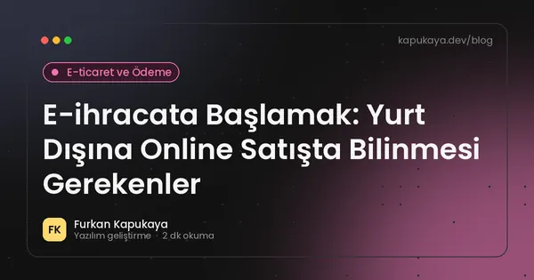
E-ihracata Başlamak: Yurt Dışına Online Satışta Bilinmesi Gerekenler
E-ihracata başlarken pazar seçimi, satış kanalları, çok dilli site, uluslararası ödeme ve kargo, gümrük ve vergi konuları, iade süreci ve resmî destekleri takip etme önerileri.
Yazıyı oku
C# 14 Yenilikleri: Extension Members, field Anahtar Kelimesi ve Daha Fazlası
.NET 10 ile gelen C# 14'ün öne çıkan özellikleri; extension members, field anahtar kelimesi, null-conditional atama, span dönüşümleri ve lambda parametre değiştiricileri örneklerle.
Yazıyı oku
İYS Nedir? E-posta ve SMS Pazarlamasında İzin Yönetimi
İleti Yönetim Sistemi'nin amacı, ticari elektronik ileti onayı, esnaf ve tacirlere gönderim istisnası, ret hakkı ve e-posta ile SMS kampanyalarında dikkat edilmesi gerekenler.
Yazıyı oku
Fidye Yazılımına (Ransomware) Karşı İşletmeler Nasıl Korunur?
Fidye yazılımlarının işletmelere nasıl bulaştığı, 3-2-1 yedekleme kuralı, değiştirilemez yedekler, yetki sınırlama, güncellemeler, çalışan farkındalığı ve saldırı anında yapılacaklar.
Yazıyı oku
HTTP Güvenlik Başlıkları: CSP, HSTS ve Diğerleri
Web sitelerini XSS, tıklama korsanlığı ve protokol düşürme saldırılarına karşı koruyan Content-Security-Policy, HSTS, X-Content-Type-Options, Referrer-Policy ve Permissions-Policy başlıklarının kullanımı.
Yazıyı oku
Web Sitesini Yayına Almadan Önce Kontrol Edilecek 20 Madde
Yeni bir web sitesini yayına almadan önce içerik, form, mobil uyum, hız, güvenlik, KVKK metinleri, analitik ve arama motoru ayarlarını kontrol etmek için pratik liste.
Yazıyı oku
Çok Kanallı Stok Senkronizasyonu: Mağaza, Site ve Pazaryeri Tek Stokta
Fiziksel mağaza, e-ticaret sitesi ve pazaryerlerinde satılan ürünlerin stoğunu tek merkezden senkronize etmek, fazla satışı önlemek ve zamanlanmış stok aktarımı kurmak için rehber.
Yazıyı oku
Bulut mu, Yerel Sunucu mu? İşletme Yazılımları İçin Doğru Altyapı
İşletme yazılımlarını bulutta veya yerel sunucuda çalıştırmanın maliyet, erişim, güvenlik, internet bağımlılığı ve yedekleme açısından karşılaştırması.
Yazıyı oku
e-Fatura ve e-Arşiv Entegrasyonu: Yazılımınıza Nasıl Bağlanır?
e-Fatura ile e-Arşiv farkı, GİB portalı ve özel entegratör seçenekleri, kendi stok veya satış yazılımınızı e-dönüşüme bağlarken dikkat edilecek teknik noktalar.
Yazıyı oku
Excel'den Özel Yazılıma Geçiş: Ne Zaman ve Nasıl?
Excel ile iş takibinin sınırları, özel yazılıma geçiş zamanının işaretleri, veri temizliği, taşıma adımları ve geçişte yapılan yaygın hatalar.
Yazıyı oku
Yapay Zekâ ile Belge Okuma: Fatura, Form ve Sözleşmelerden Veri Çıkarmak
OCR ve yapay zekâ ile taranmış belgelerden, faturalardan ve formlardan yapılandırılmış veri çıkarma, doğrulama adımları, insan kontrolü, entegrasyon ve gizlilik önerileri.
Yazıyı oku
KVKK Veri İhlali Bildirimi: 72 Saatte Ne Yapılmalı?
Kişisel veri ihlali yaşandığında KVKK kapsamında Kurul'a 72 saat içinde bildirim, ilgili kişilerin bilgilendirilmesi, ihlal müdahale planı ve yazılım tarafında alınacak önlemler.
Yazıyı oku
İletişim Formuna Gelen Spam Nasıl Önlenir?
Web sitesi iletişim formlarına gelen spam ve bot mesajlarını honeypot, zaman kontrolü, sunucu taraflı doğrulama ve gizlilik dostu yöntemlerle azaltmanın yolları.
Yazıyı oku
İş Süreci Otomasyonu: Hangi İşler Otomatikleştirilmeli?
İşletmelerde tekrar eden işleri belirleme, otomasyon için uygun süreçleri seçme, geri dönüş hesabı, entegrasyon yöntemleri ve otomasyon projelerinde sık yapılan hatalar.
Yazıyı oku
VERBİS Nedir? Veri Sorumluları Sicili ve Kayıt Yükümlülüğü
Veri Sorumluları Sicil Bilgi Sistemi'nin amacı, kayıt yükümlülüğünün kimleri kapsadığı, kayıt sırasında istenen bilgiler, kişisel veri envanteri ve kayıttan muaf olanların yükümlülükleri.
Yazıyı oku
Çok Dilli Web Sitesi Nasıl Kurulur? Hreflang ve Doğru Yapı
Çok dilli web sitelerinde adres yapısı, hreflang etiketleri, çeviri kalitesi, dil seçici tasarımı ve arama motorlarında her dilin doğru ülkede görünmesi için yapılması gerekenler.
Yazıyı oku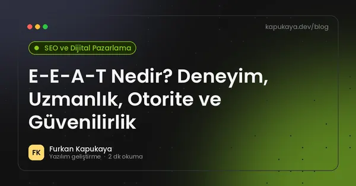
E-E-A-T Nedir? Deneyim, Uzmanlık, Otorite ve Güvenilirlik
Google'ın içerik kalitesi değerlendirmesinde kullandığı E-E-A-T kavramının dört bileşeni, işletme sitelerinde nasıl gösterileceği ve güven sinyallerini artırmanın pratik yolları.
Yazıyı oku
Google Sheets Entegrasyonu: Tabloları Yazılımlarınıza Bağlamak
Google E-Tablolar'ı web formları, işletme yazılımları ve raporlarla API üzerinden entegre etmek, hangi durumlarda yeterli olduğu, sınırları ve veritabanına geçiş zamanı.
Yazıyı oku
SQL ve NoSQL Arasındaki Fark: Projenize Hangi Veritabanı Uygun?
İlişkisel (SQL) ve NoSQL veritabanlarının yapısı, avantajları, kullanım alanları, tutarlılık ve ölçeklenebilirlik açısından karşılaştırması.
Yazıyı oku
ERP Nedir? KOBİ'ler İçin Gerekli mi, Ne Zaman Geçilmeli?
ERP sisteminin ne olduğu, hangi modüllerden oluştuğu, KOBİ'lerin ERP'ye ne zaman ihtiyaç duyduğu, hazır ERP ile özel yazılım karşılaştırması ve geçişte dikkat edilecekler.
Yazıyı oku
SFTP ile Otomatik Dosya Aktarımı: Tedarikçi ve Banka Dosyalarını İşlemek
Tedarikçi fiyat listeleri, banka ekstreleri ve sipariş dosyalarının SFTP üzerinden güvenli ve otomatik aktarımı, FTP ile farkı, dosya doğrulama, arşivleme ve hata yönetimi.
Yazıyı oku
Core Web Vitals Nedir? LCP, INP ve CLS Nasıl İyileştirilir?
Google'ın sayfa deneyimi metrikleri LCP, INP ve CLS'nin anlamı, iyi kabul edilen eşik değerleri, ölçüm araçları ve pratik iyileştirme yöntemleri.
Yazıyı oku
Freelance Yazılım Projesi Nasıl Yönetilir?
İhtiyaç analizi, kapsam, teknik planlama, teslim ve bakım aşamalarını daha sağlıklı yönetmek için pratik yaklaşım.
Yazıyı oku
Oltalama (Phishing) Saldırıları: Çalışanlar İçin Farkındalık Rehberi
Sahte e-posta, SMS ve QR kodlarla yapılan oltalama saldırılarının belirtileri, sahte fatura ve CEO dolandırıcılığı örnekleri, işletmelerin alabileceği teknik ve kurumsal önlemler.
Yazıyı oku
Web Sitesi Yaptırmadan Önce Sorulması Gereken 15 Soru
Web tasarım firması veya freelance geliştiriciyle çalışmadan önce sahiplik, kapsam, SEO, bakım ve güvenlik hakkında sormanız gereken 15 kritik soru.
Yazıyı oku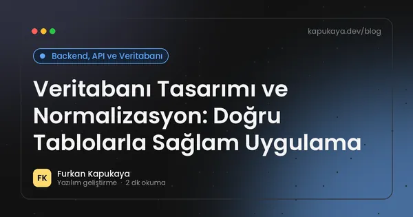
Veritabanı Tasarımı ve Normalizasyon: Doğru Tablolarla Sağlam Uygulama
İlişkisel veritabanı tasarımında normalizasyonun amacı, birinci, ikinci ve üçüncü normal formlar, birincil ve yabancı anahtarlar, indeksler ve bilinçli denormalizasyon örnekleri.
Yazıyı oku
SSL Sertifikası Nedir? HTTPS'e Geçiş ve Sık Yapılan Hatalar
SSL/TLS sertifikasının ne işe yaradığı, DV, OV ve EV farkları, ücretsiz sertifikalar, HTTPS'e geçiş adımları, HSTS ve karışık içerik sorunları.
Yazıyı oku
SQL Injection Nasıl Önlenir? Güvenli Veritabanı Erişimi
SQL injection açığının nedeni, parametreli sorgular, ORM kullanımı, en az yetki ilkesi, girdi doğrulama ve .NET uygulamalarında güvenli veritabanı erişimi için pratik öneriler.
Yazıyı oku
C# Record Tipleri: Ne Zaman class Yerine record Kullanılmalı?
C# record ve record struct tiplerinin değer eşitliği, değişmezlik, with ifadesi, DTO ve domain modellerinde kullanımı ile class'tan farkları ve dikkat edilmesi gerekenler.
Yazıyı oku
İşletmeler İçin Masaüstü Otomasyon Sistemleri
Stok, satış, müşteri, personel ve servis süreçlerinin özel yazılımla nasıl dijitalleştirilebileceğini anlatan rehber.
Yazıyı oku
Google Analytics 4 Temel Kurulum: İşletmeler İçin Önemli Raporlar
Google Analytics 4 kurulumu, önemli olayların işaretlenmesi, trafik kaynakları, dönüşüm takibi, çerez onayı ve KVKK açısından dikkat edilmesi gerekenlerle pratik GA4 rehberi.
Yazıyı oku
OWASP Top 10 (2025) Nedir? Web Uygulamalarında En Kritik 10 Risk
OWASP Top 10 2025 listesindeki erişim kontrolü, yanlış yapılandırma, tedarik zinciri, enjeksiyon ve hata yönetimi risklerinin açıklaması ve korunma yolları.
Yazıyı oku
Yerel LLM: Yapay Zekâ Modellerini Kendi Sunucunuzda Çalıştırmak
Açık ağırlıklı dil modellerini şirket içi sunucuda çalıştırmanın gizlilik ve maliyet avantajları, donanım ihtiyacı, model lisansları, performans beklentisi ve hangi senaryolarda tercih edileceği.
Yazıyı oku
Git ve GitHub Başlangıç Rehberi: Temel Komutlar ve İş Akışı
Git ile sürüm kontrolünün temelleri, sık kullanılan komutlar, dal (branch) mantığı, pull request akışı, .gitignore ve gizli bilgileri koruma önerileri.
Yazıyı oku
Yapay Zekâ Halüsinasyonu Nedir? Yanlış Bilgiyi Azaltmanın Yolları
Büyük dil modellerinin ikna edici ama yanlış bilgi üretmesinin nedenleri, iş süreçlerindeki riskleri, RAG, kaynak gösterme, doğrulama kuralları ve insan kontrolüyle hataları azaltma yöntemleri.
Yazıyı oku
WPF ve MVVM Nedir? Masaüstü Uygulamalarda Düzenli Mimari
WPF'de MVVM deseninin Model, View ve ViewModel katmanları, veri bağlama, komutlar, CommunityToolkit.Mvvm ile kod azaltma ve test edilebilir masaüstü uygulama geliştirme.
Yazıyı oku
MVP Nedir? Yazılım Fikrinizi En Az Riskle Test Etmek
Minimum uygulanabilir ürünün (MVP) ne olduğu, ilk sürümde hangi özelliklerin yer alması gerektiği, kullanıcı geri bildirimiyle geliştirme ve işletme içi yazılımlarda MVP yaklaşımı.
Yazıyı oku
Yerel SEO ve Google İşletme Profili: Haritada Öne Çıkmanın Yolları
Yerel SEO'nun nasıl çalıştığı, Google İşletme Profili optimizasyonu, NAP tutarlılığı, müşteri yorumları ve şehir odaklı hizmet sayfaları rehberi.
Yazıyı oku
ASP.NET Core Web API Nedir?
ASP.NET Core Web API, controller, dependency injection, servis katmanı ve veri erişimi için pratik bir giriş.
Yazıyı oku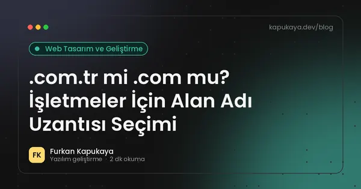
.com.tr mi .com mu? İşletmeler İçin Alan Adı Uzantısı Seçimi
.com.tr ve .com uzantılarının farkları, belgesiz .com.tr tescili, marka koruma, yerel güven ve SEO açısından hangi alan adı uzantısının işletmenize uygun olduğu.
Yazıyı oku
SEO Nedir? 2026'da Arama Motoru Optimizasyonu Rehberi
SEO'nun ne olduğu, teknik SEO, içerik ve otorite ayakları, yapay zekâ destekli arama sonuçlarının etkisi ve işletmeler için uygulanabilir ilk adımlar.
Yazıyı oku
KVKK Uyumlu Web Sitesi Nasıl Olmalı? Formlar, Çerezler ve Aydınlatma Metni
Web sitelerinde KVKK kapsamında aydınlatma metni, açık rıza, çerez tercihi, iletişim formları, veri güvenliği ve yurt dışı aktarım konularında genel rehber.
Yazıyı oku
RAG Nedir? Yapay Zekâyı Kendi Belgelerinizle Konuşturmak
Retrieval-Augmented Generation (RAG) yaklaşımının çalışma mantığı, embedding ve vektör arama, belge hazırlığı, kaynak gösterme ve iş uygulamalarında kullanım.
Yazıyı oku
AI Coding Agent Nedir ve Yazılımcının Rolü Nasıl Değişiyor?
Coding agentların kod yazmanın ötesinde test, düzeltme, inceleme ve teslim süreçlerine nasıl dahil olduğunu anlatan rehber.
Yazıyı oku
İki Faktörlü Doğrulama (2FA) Nedir? Hesapları Korumanın En Etkili Yolu
İki faktörlü doğrulamanın çalışma mantığı, SMS, doğrulama uygulaması, güvenlik anahtarı ve passkey yöntemlerinin karşılaştırması ve işletmeler için uygulama önerileri.
Yazıyı oku
Araç Bakım ve Filo Takip Yazılımı: Servis, Lastik ve Hatırlatmalar
Oto servis, lastik firmaları ve araç filosu yöneten işletmeler için plaka bazlı kayıt, bakım geçmişi, lastik oteli, periyodik bakım hatırlatmaları ve stok takibi içeren yazılım rehberi.
Yazıyı oku
Junior .NET Developer İçin Yol Haritası
C# ve .NET ile gerçek dünya becerileri geliştirmek isteyen yazılımcılar için pratik öğrenme yol haritası.
Yazıyı oku
İşletmeler Yapay Zekâyı Nasıl Kullanabilir? 12 Pratik Kullanım Alanı
Küçük ve orta ölçekli işletmelerin müşteri hizmetleri, içerik, belge işleme, raporlama ve iç süreçlerde yapay zekâyı güvenli ve verimli kullanma yolları.
Yazıyı oku
API Versiyonlama: Mevcut İstemcileri Bozmadan API'yi Geliştirmek
API versiyonlamanın neden gerekli olduğu, adres, başlık ve sorgu parametresiyle versiyonlama yöntemleri, kırıcı değişiklikler, eski sürümleri emekliye ayırma ve .NET'te uygulama.
Yazıyı oku
C# Async/Await Nedir?
C# içinde Task, async ve await ile asenkron programlamanın pratik temellerini öğrenin.
Yazıyı oku
Yapay Zekâ ile Veri Analizi: Satış ve Stok Verisine Soru Sormak
İşletme verilerine doğal dille soru sorabilen yapay zekâ çözümleri, veritabanına güvenli erişim, salt okunur yetki, hesaplamaların doğrulanması, gizlilik ve yönetim paneli ile birlikte kullanım.
Yazıyı oku
.NET'te Dependency Injection: Servis Ömürleri ve Sık Yapılan Hatalar
.NET'te bağımlılık enjeksiyonunun mantığı, Singleton, Scoped ve Transient servis ömürleri, constructor injection, keyed services ve kaçınılması gereken yaygın hatalar.
Yazıyı oku
CRM Nedir? Küçük İşletmeler İçin Müşteri İlişkileri Yönetimi
CRM'in ne olduğu, küçük ve orta ölçekli işletmelere faydaları, temel modüller, satış hunisi, doğru CRM seçimi ve başarılı kullanım ipuçları.
Yazıyı oku
Yapay Zekâ Aramaları İçin Optimizasyon (GEO): AI Özetlerinde Nasıl Görünürsünüz?
Google AI Modu, yapay zekâ özetleri ve sohbet asistanlarında kaynak gösterilmek için içerik, teknik altyapı ve marka güveni tarafında uygulanabilir öneriler.
Yazıyı oku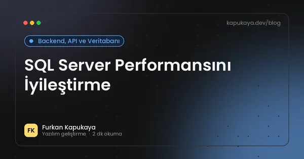
SQL Server Performansını İyileştirme
Index, sorgu tasarımı ve uygulama veri erişimi için pratik SQL Server performans önerileri.
Yazıyı oku
ASP.NET Core Minimal API ile Hızlı Web Servisi Geliştirme
Minimal API'nin ne olduğu, controller yaklaşımından farkı, endpoint gruplama, doğrulama, OpenAPI, kimlik doğrulama ve proje yapısı önerileri.
Yazıyı oku
.NET 10 ve C# 14 ile Gelen Yenilikler: Geçiş Rehberi
.NET 10 LTS sürümünün destek süresi, C# 14 dil özellikleri, performans ve ASP.NET Core yenilikleri ile mevcut projeleri güncellerken izlenecek adımlar.
Yazıyı oku
Yapay Zekâ ile Üretilen İçerik ve Telif Hakkı: İşletmeler Neye Dikkat Etmeli?
Yapay zekâ ile üretilen metin, görsel ve kodun telif durumu, FSEK'teki eser sahibi kavramı, araçların kullanım koşulları, başkasının eserine benzerlik riski, marka hakları ve şeffaflık önerileri.
Yazıyı oku
WhatsApp Business API Entegrasyonu: Kurallar ve Kullanım Alanları
WhatsApp Business uygulaması ile WhatsApp Business Platform (API) farkı, onaylı mesaj şablonları, müşteri izni, sipariş ve randevu bildirimleri ve resmî olmayan araçların riskleri.
Yazıyı oku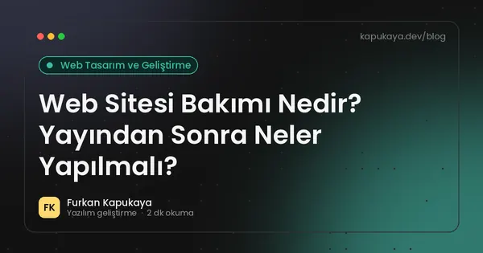
Web Sitesi Bakımı Nedir? Yayından Sonra Neler Yapılmalı?
Web sitesi yayına alındıktan sonra güvenlik güncellemeleri, yedekleme, hız, içerik ve SEO kontrolleriyle sitenin sağlıklı kalması için yapılması gereken düzenli bakım işleri.
Yazıyı oku
Veritabanı Yedekleme Stratejisi: 3-2-1 Kuralı ve Geri Yükleme Testi
İşletme verilerini korumak için tam, fark ve işlem günlüğü yedekleri, 3-2-1 kuralı, fidye yazılımına karşı önlemler ve geri yükleme testinin önemi.
Yazıyı oku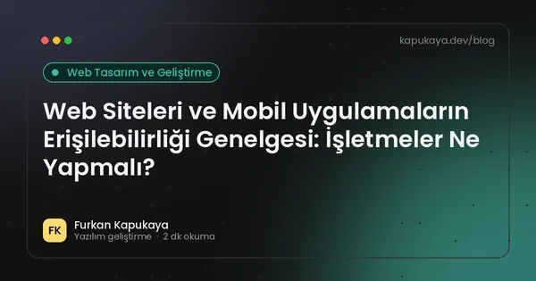
Web Siteleri ve Mobil Uygulamaların Erişilebilirliği Genelgesi: İşletmeler Ne Yapmalı?
2025/10 sayılı Cumhurbaşkanlığı Genelgesi'nin kapsamı, WCAG 2.2 ve A seviyesi kontrol listesi, süreler, Erişilebilirlik Logosu ve işletmelerin web sitelerini erişilebilir hale getirmek için atabileceği adımlar.
Yazıyı oku
Web Sitesi İçeriği Nasıl Hazırlanır? Sayfa Sayfa Rehber
Kurumsal web sitesi için ana sayfa, hizmetler, hakkımızda ve iletişim sayfalarının içeriğini müşteri gözünden, anlaşılır ve arama motorlarına uygun şekilde hazırlama rehberi.
Yazıyı oku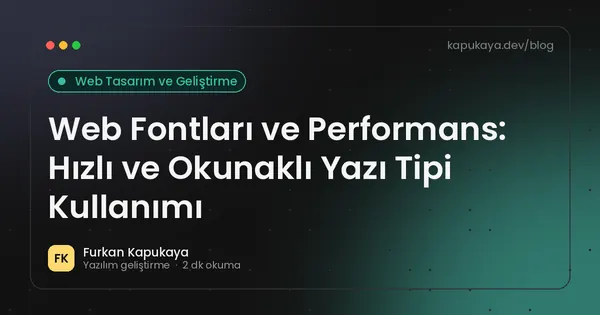
Web Fontları ve Performans: Hızlı ve Okunaklı Yazı Tipi Kullanımı
Web fontlarının sayfa hızına etkisi, font-display, alt küme kullanımı, yerel barındırma, değişken fontlar ve lisans konularıyla hızlı ve okunaklı tipografi rehberi.
Yazıyı oku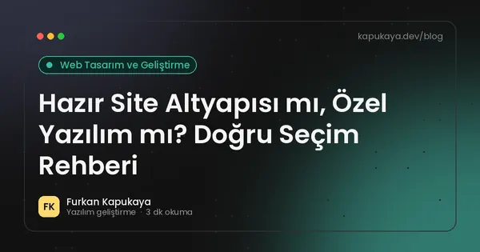
Hazır Site Altyapısı mı, Özel Yazılım mı? Doğru Seçim Rehberi
Hazır içerik yönetim sistemi, site kurucu veya özel yazılım arasında seçim yaparken maliyet, esneklik, güvenlik ve sahiplik açısından karşılaştırma.
Yazıyı oku
KOBİ'ler İçin Dijital Dönüşüm Yol Haritası: Nereden Başlamalı?
Küçük ve orta ölçekli işletmeler için dijital dönüşümün adımları, öncelik belirleme, hızlı kazanımlar, veri düzeni, ekip uyumu ve bütçeyi verimli kullanma önerileri.
Yazıyı oku
Backlink Nedir? Güvenli ve Kalıcı Bağlantı Kazanma Yolları
Backlinkin ne olduğu, kaliteli ve riskli bağlantı farkı, satın alınan linklerin tehlikeleri ve işletmelerin doğal yollarla bağlantı kazanabileceği pratik yöntemler.
Yazıyı oku
Yapay Zekâ ile Toplantı Notları ve Özetleri: Faydalar ve Kurallar
Toplantıların yapay zekâ ile yazıya dökülmesi ve özetlenmesi, görev çıkarma, CRM'e aktarma, katılımcıların bilgilendirilmesi, ses kaydının KVKK boyutu ve doğruluk kontrolü.
Yazıyı oku
OpenAPI ve Swagger ile API Dokümantasyonu
OpenAPI belirtiminin amacı, Swagger araçları, ASP.NET Core'da yerleşik OpenAPI desteği, iyi API dokümantasyonunun özellikleri ve istemci kodu üretimi.
Yazıyı oku
Teknik Servis Takip Programı: Arıza Kaydından Teslime
Teknik servis işletmeleri için arıza kaydı, servis fişi, parça ve stok takibi, müşteri bilgilendirme SMS'leri, garanti takibi ve teknisyen performans raporlarını içeren yazılım rehberi.
Yazıyı oku
KVKK'da Yurt Dışına Veri Aktarımı: 2024 Değişikliği ve Bulut Hizmetleri
7499 sayılı Kanun ile 1 Haziran 2024'te değişen yurt dışına kişisel veri aktarımı kuralları, yeterlilik kararı, standart sözleşme ve bildirim süresi, bulut ve SaaS kullanan işletmeler için pratik değerlendirme.
Yazıyı oku
Aspire Nedir? .NET ile Dağıtık Uygulamaları Geliştirmek ve Gözlemlemek
.NET Aspire olarak tanıtılan Aspire'ın uygulama modeli, servis keşfi, hazır entegrasyonlar, geliştirme paneli ve OpenTelemetry ile gözlemlenebilirlik özelliklerine giriş.
Yazıyı oku
PageSpeed Insights Nasıl Okunur? Puandan Önce Bakılması Gerekenler
Google PageSpeed Insights raporundaki gerçek kullanıcı verisi ile laboratuvar testi farkı, LCP, INP ve CLS değerleri, puanın anlamı ve önerileri önceliklendirme yöntemi.
Yazıyı oku
KVKK İlgili Kişi Başvuruları: Verimi Silin Diyen Müşteriye Ne Yapılmalı?
KVKK kapsamında ilgili kişinin hakları, başvuru yöntemleri, 30 günlük cevap süresi, kimlik doğrulama, silme ve düzeltme talepleri ile yazılımlarda başvuruları yönetme önerileri.
Yazıyı oku
Google Yorumları Nasıl Artırılır? Kurallara Uygun Yöntemler
Google İşletme Profili yorumlarını kurallara uygun şekilde artırmanın yolları, yorum isteme zamanı, olumsuz yorumlara cevap verme ve sahte yorumların riskleri.
Yazıyı oku
Web Sitesi Yaptırmak Ne Kadar Tutar? 2026 Maliyet Rehberi
Web sitesi fiyatlarını belirleyen tasarım, sayfa sayısı, altyapı, içerik, hosting ve bakım kalemlerini 2026 koşullarıyla açıklayan rehber.
Yazıyı oku
KOBİ'ler İçin Siber Güvenlik Kontrol Listesi: 15 Temel Adım
Küçük ve orta ölçekli işletmelerin hesap güvenliği, yedekleme, güncellemeler, cihaz yönetimi, e-posta güvenliği, çalışan farkındalığı ve olay müdahalesi için uygulayabileceği temel siber güvenlik adımları.
Yazıyı oku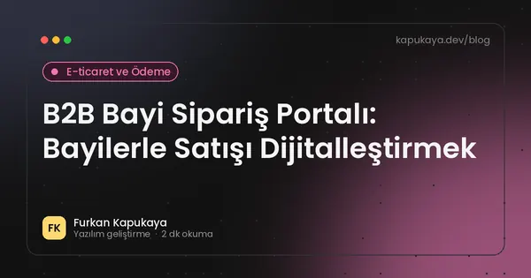
B2B Bayi Sipariş Portalı: Bayilerle Satışı Dijitalleştirmek
Bayi ve kurumsal müşterilerle çalışan işletmeler için cari bakiye, bayiye özel fiyat, sipariş, kampanya, sevkiyat takibi ve ERP entegrasyonu içeren B2B portal rehberi.
Yazıyı oku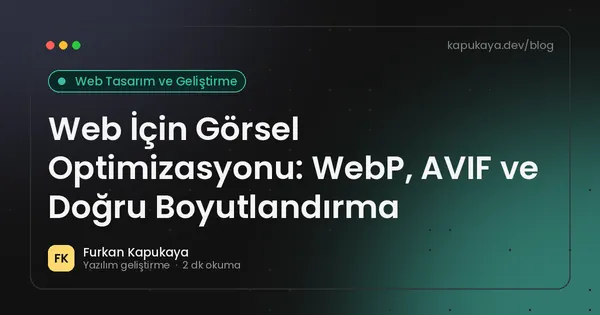
Web İçin Görsel Optimizasyonu: WebP, AVIF ve Doğru Boyutlandırma
Web sitesindeki görselleri WebP ve AVIF formatları, doğru boyutlandırma, srcset, lazy loading ve sıkıştırma ile hızlandırmanın yolları ve görsel telif hakkına dikkat edilmesi gerekenler.
Yazıyı oku
E-ticarette Cayma Hakkı ve İade: Mesafeli Satışta Temel Kurallar
Mesafeli sözleşmelerde 14 günlük cayma hakkı, ön bilgilendirme formu, istisna ürünler, iade bedelinin ödenme süresi ve e-ticaret sitelerinin yazılım tarafında yapması gerekenler.
Yazıyı oku
Online Randevu Sistemi: Salon, Klinik ve Servisler İçin Rehber
Online randevu sisteminin işletmeye faydaları, olması gereken özellikler, hatırlatma, personel takvimi, KVKK ve web sitesi entegrasyonu.
Yazıyı oku
Anahtar Kelime Araştırması Nasıl Yapılır? İşletmeler İçin Adım Adım
Müşterilerin gerçekte ne aradığını bulmak için anahtar kelime araştırması, arama niyeti, uzun kuyruklu kelimeler, ücretsiz araçlar ve kelimeleri sayfalarla eşleştirme yöntemi.
Yazıyı oku
MCP Nedir? AI Agentlar Araçlara Nasıl Bağlanır?
Model Context Protocol yaklaşımını ve AI agentların araçlar, servisler ve proje bağlamıyla çalışmasını anlaşılır biçimde ele alın.
Yazıyı oku
.NET'te Yapılandırma: appsettings, Options Pattern ve Gizli Bilgiler
.NET uygulamalarında appsettings.json, ortam değişkenleri, ortam bazlı ayarlar, Options pattern ile tip güvenli yapılandırma ve parola ile API anahtarlarının güvenli saklanması.
Yazıyı oku
PDF Teklif ve Belge Üretimini Otomatikleştirmek
Teklif, sipariş formu, sertifika ve rapor gibi belgelerin şablonlardan otomatik PDF olarak üretilmesi, .NET PDF kütüphaneleri ve lisansları, Türkçe karakter ve font konuları, e-imza ve arşivleme.
Yazıyı oku
Google AI Modu ve AI Bakışı Türkiye'de: İşletmeler İçin SEO'da Neler Değişti?
Şubat 2026'da Türkiye'de kullanıma açılan Google AI Modu ve AI Bakışı özelliklerinin aramalara etkisi, sıfır tıklama eğilimi ve işletmelerin içerik stratejisini nasıl uyarlaması gerektiği.
Yazıyı oku
ETBİS Nedir? E-ticaret Yapan İşletmeler İçin Kayıt Rehberi
Ticaret Bakanlığı'nın Elektronik Ticaret Bilgi Sistemi'nin amacı, hangi işletmelerin kayıt yaptırması gerektiği, kayıt sırasında istenen bilgiler ve kayıt sonrası dikkat edilmesi gerekenler.
Yazıyı oku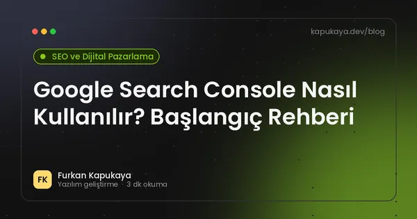
Google Search Console Nasıl Kullanılır? Başlangıç Rehberi
Search Console kurulumu, site doğrulama, site haritası gönderme, performans raporu, dizine ekleme sorunları ve düzenli takip edilmesi gereken raporlar.
Yazıyı oku
2026’da Yapay Zeka Yazılım Geliştirmeyi Nasıl Değiştiriyor?
AI destekli geliştirme, coding agent yaklaşımı, insan denetimi ve üretim süreçlerinde yeni çalışma biçimleri.
Yazıyı oku
Mobil Uyumlu Web Sitesi Nedir? Responsive Tasarımın 2026 Kuralları
Mobil uyumlu (responsive) web sitesinin ne olduğu, mobile-first indekslemenin SEO'ya etkisi ve telefonda iyi deneyim için uygulanabilir kurallar.
Yazıyı oku
JWT ile Kimlik Doğrulama Nedir? Güvenli Kullanım Rehberi
JSON Web Token'ın yapısı, API'lerde kimlik doğrulama akışı, access ve refresh token, token saklama, süre yönetimi ve sık yapılan güvenlik hataları.
Yazıyı oku
QR Menü Sistemi: Restoran ve Kafeler İçin Kurallar ve İpuçları
Restoran, kafe ve pastanelerde QR menü kullanımı, Fiyat Etiketi Yönetmeliği'ndeki güncel kurallar, basılı fiyat listesi zorunluluğu, hızlı ve erişilebilir dijital menü tasarımı.
Yazıyı oku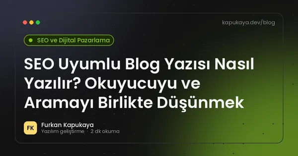
SEO Uyumlu Blog Yazısı Nasıl Yazılır? Okuyucuyu ve Aramayı Birlikte Düşünmek
Blog yazısında konu ve arama niyeti seçimi, başlık yapısı, giriş paragrafı, alt başlıklar, iç bağlantılar, görseller, sık sorulan sorular ve yayın sonrası güncelleme adımları.
Yazıyı oku
Zamanlanmış Görevler: Konsol Uygulamalarıyla Gece Çalışan Otomasyonlar
Windows Görev Zamanlayıcı, Linux cron ve arka plan servisleriyle düzenli çalışan otomasyonlar kurmak, loglama, hata bildirimi, yeniden deneme ve güvenli yapılandırma önerileri.
Yazıyı oku
Excel Raporlarını Otomatikleştirmek: Kodla Excel Dosyası Oluşturma
Her gün elle hazırlanan Excel raporlarını otomatik oluşturmak, .NET ile Excel dosyası üretme kütüphaneleri ve lisansları, biçimlendirme, formüller ve rapor dağıtımı.
Yazıyı oku
Personel ve Vardiya Takip Programı: Neleri Kolaylaştırır?
Personel bilgileri, vardiya planlama, izin ve mesai takibi, giriş-çıkış kayıtları ve raporlama için personel takip yazılımının sağladığı faydalar ve KVKK açısından dikkat edilecekler.
Yazıyı oku
Yazılım Bakım ve Destek Sözleşmesinde Neler Olmalı?
Teslim sonrası yazılım bakım ve destek sözleşmesinin kapsamı, hata düzeltme ile yeni geliştirme ayrımı, müdahale süreleri, güncellemeler, yedekleme, kaynak kodu ve sözleşme bitişi.
Yazıyı oku
Teknik SEO Kontrol Listesi: Yayına Almadan Önce 20 Madde
Tarama, dizine ekleme, site haritası, canonical, hız, mobil uyum, yapısal veri ve güvenlik başlıklarında yayın öncesi teknik SEO kontrol listesi.
Yazıyı oku
Open Graph Etiketleri: Paylaşılan Bağlantılar Nasıl Güzel Görünür?
WhatsApp, LinkedIn, Facebook ve X'te paylaşılan bağlantıların başlık, açıklama ve görselini belirleyen Open Graph ve Twitter Card etiketlerinin kullanımı ve kontrolü.
Yazıyı oku
Çok Şubeli İşletmeler İçin Yerel SEO: Her Şubeyi Haritada Öne Çıkarmak
Birden fazla şubesi olan işletmelerde şube başına Google İşletme Profili, şube sayfaları, tutarlı ad-adres-telefon bilgisi, yorum yönetimi ve yapısal veri ile yerel aramalarda görünürlük.
Yazıyı oku
WordPress mi Özel Kodlama mı? Kurumsal Site İçin Doğru Seçim
WordPress ile özel kodlanmış web sitelerinin maliyet, hız, güvenlik, bakım, esneklik ve içerik yönetimi açısından karşılaştırması ve hangi durumda hangisinin seçilmesi gerektiği.
Yazıyı oku
Idempotency Nedir? Aynı İsteğin İki Kez İşlenmesini Önlemek
API'lerde idempotency kavramı, çift ödeme ve çift sipariş risklerinin önlenmesi, idempotency anahtarı, webhook tekrarları, veritabanı kısıtları ve güvenli yeniden deneme tasarımı.
Yazıyı oku
Vektör Veritabanı Nedir? Anlamsal Arama ve Yapay Zekâ Uygulamaları
Embedding ve vektör kavramları, vektör veritabanlarının çalışma mantığı, anlamsal arama, RAG ile ilişkisi, ayrı vektör veritabanı ile mevcut veritabanının vektör özelliklerini kullanma karşılaştırması.
Yazıyı oku
İç Linkleme Nedir? Sayfaları Birbirine Doğru Bağlamanın Yolları
İç bağlantıların SEO ve kullanıcı deneyimine etkisi, bağlantı metni seçimi, yetim sayfalar, menü ve içerik içi bağlantılar ile uygulanabilir iç linkleme stratejisi.
Yazıyı oku
Webhook Nedir? Sistemler Arası Anlık Bildirim Rehberi
Webhook'un ne olduğu, API sorgulamadan farkı, ödeme ve sipariş senaryoları, imza doğrulama, tekrar deneme, idempotency ve güvenli webhook alıcısı yazma.
Yazıyı oku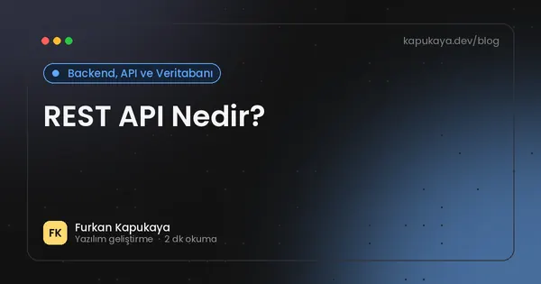
REST API Nedir?
REST API, HTTP metodları, resource yaklaşımı ve status code temellerini öğrenin.
Yazıyı oku
.NET BackgroundService ile Arka Planda Çalışan İşler
.NET'te BackgroundService ve IHostedService ile arka plan işleri yazmak, PeriodicTimer, scoped servis kullanımı, hata yönetimi, Windows Service ve Linux systemd olarak çalıştırma.
Yazıyı oku
Yapay Zekâ Araçlarını Kullanırken KVKK'ya Nasıl Uyulur?
İşletmelerin üretken yapay zekâ araçlarını kullanırken kişisel verileri koruması, veri minimizasyonu, anonimleştirme, yurt dışı aktarım, aydınlatma, kurumsal sözleşmeler ve iç politika önerileri.
Yazıyı oku
301 Yönlendirme Nedir? Site Taşırken SEO Kaybı Nasıl Önlenir?
301 ve 302 yönlendirme farkı, site yenileme ve alan adı değişikliğinde adres eşleştirme, yönlendirme zincirleri, 404 yönetimi ve trafik kaybını önleme adımları.
Yazıyı oku
WinForms, WPF ve .NET MAUI: Masaüstü Uygulama İçin Hangisi?
Windows Forms, WPF ve .NET MAUI teknolojilerinin güçlü ve zayıf yönleri, kullanım alanları ve işletme masaüstü uygulamaları için seçim kriterleri.
Yazıyı oku
Ödeme Sistemleri Entegrasyonunda Dikkat Edilmesi Gerekenler
Ödeme akışlarında güvenlik, webhook, idempotency, hata yönetimi ve kayıt tutma gibi kritik backend konuları.
Yazıyı oku
3D Secure Nedir? Online Ödemelerde Güvenlik ve Dolandırıcılık Önleme
3D Secure doğrulamanın nasıl çalıştığı, e-ticaret siteleri için faydaları, kart bilgisi saklamanın riskleri, sahte sipariş belirtileri ve ödeme sayfasında güveni artırma yolları.
Yazıyı oku
İşletmeler İçin Yönetim Paneli (Dashboard) Nasıl Tasarlanır?
Yöneticilerin tek ekranda işletmenin durumunu görmesini sağlayan dashboard tasarımında doğru metrikleri seçme, veri kaynaklarını birleştirme, görselleştirme ve yetkilendirme önerileri.
Yazıyı oku
ASP.NET Core Uygulamalarında Performans Optimizasyonu
Caching, async I/O, sorgu optimizasyonu, logging ve response sürelerini iyileştirmek için uygulanabilir yöntemler.
Yazıyı oku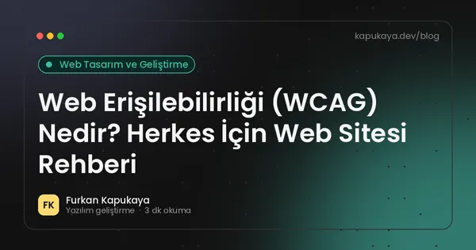
Web Erişilebilirliği (WCAG) Nedir? Herkes İçin Web Sitesi Rehberi
WCAG ilkeleri, erişilebilir web sitesinin temel kuralları, sık yapılan hatalar ve erişilebilirliğin SEO ile kullanıcı deneyimine katkısı.
Yazıyı oku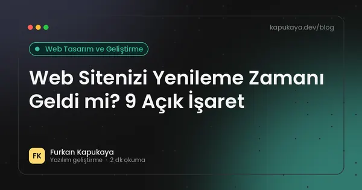
Web Sitenizi Yenileme Zamanı Geldi mi? 9 Açık İşaret
Eski görünen tasarım, yavaş açılış, mobilde bozulma ve gelmeyen talepler gibi web sitesinin yenilenmesi gerektiğini gösteren işaretler ve yenileme sürecine nasıl başlanacağı.
Yazıyı oku
Web Sitesi Nasıl Hızlandırılır? 15 Etkili Yöntem
Görsel optimizasyonu, önbellekleme, CDN, font yönetimi, JavaScript azaltma ve sunucu ayarlarıyla web sitesini hızlandırmanın pratik yolları.
Yazıyı oku
Kurumsal Blog İçin İçerik Takvimi Nasıl Hazırlanır?
İşletme blogu için konu bulma, konu kümeleri, yayın sıklığı, içerik takvimi şablonu, eski yazıları güncelleme ve blogu müşteri talebine dönüştürme yöntemleri.
Yazıyı oku
Redis ile Önbellek: Uygulamaları Hızlandırmanın Yolu ve Lisans Notları
Önbelleklemenin mantığı, Redis ve benzeri bellek içi veri depolarının kullanım alanları, önbellek geçersizleştirme, .NET HybridCache ve Redis lisans değişiklikleri ile alternatifler.
Yazıyı oku
Aramanızla eşleşen yazı bulunamadı. Farklı bir kelime deneyin veya tüm yazıları gösterin.